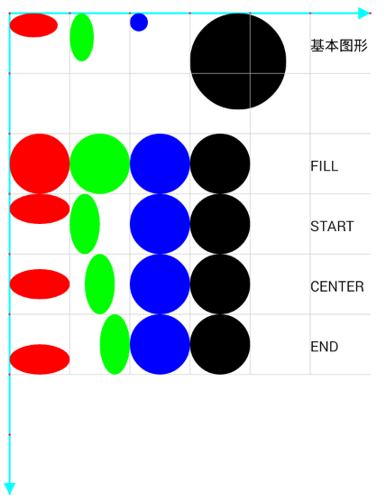

简介
Android Framework 为 2D 和 3D 提供了多种多样的图形渲染 API，这些 API 与厂商实现的 graphics drivers 交互，所以了解这些 API 在更高层次是如何工作的是很重要的。
应用开发者绘制图像到屏幕上有两种方法：使用 Canvas 或者 OpenGL。
此文涉及的类汇总：
android.graphics.Canvas 是一个 2D 的图形 API，而且是开发者中最流行的图形 API。
从 Android 4.0 开始，硬件加速 Canvas 是默认打开的。因此，在 Android4.0 以及之后的版本上，支持 OpenGl ES 2.0 的硬件 GPU 都是强制必需的。
除了 Canvas，开发渲染图形的另外一种方法是通过直接使用 OpenGL ES 渲染到一块 Surface 上。Android 在 android.opengl中提供了
OpenGl ES 的接口，开发者可以使用 SDK 里的这些接口完成他们的 GL 实现，或者使用 NDK 中提供的 native APIs。
Android 通过 OpenGL 包含了对高性能 2D 和 3D 图形的支持，尤其支持 OpenGLES API。OpenGL 是一个跨平台的图形 API，提供了软件操作 3D 图形硬件的接口。OpenGLES 是一个专用于嵌入式设备的 OpenGL 规格。
Canvas 及相关类
java.lang.Object
android.graphics.Canvas
public class Canvas {
public Canvas() {}
public Canvas(Bitmap bitmap) {}
}
enum Canvas.EdgeType {}
enum Canvas.VertexMode {}
请务必记住：
绘制内容是根据画布（Canvas）的规定绘制在屏幕上的.
画布（Canvas）只是绘制时的规则，但内容实际上是绘制在屏幕上的.
内容的位置由坐标决定，而坐标是相对于画布而言的.
Canvas 是画布，我们通过 Canvas 的各种 drawXXX 方法将图形绘制到 Canvas 上面，在 drawXXX 方法中我们需要传入要绘制的图形的坐标形状，还要传入一个画笔 Paint。
一个 Canvas 对象有四大基本要素：
一个用来保存像素的 Bitmap;
一个 Canvas 在 Bitmap 上进行绘制操作;
绘制的图案;
绘制的所要用到的画笔 Paint.
画布的构成：由多个图层构成，如下图:
- 在画布上操作 = 在图层上操作
- 如无设置，绘制操作和画布操作是默认在默认图层上进行
- 在通常情况下，使用默认图层就可满足需求；若需要绘制复杂的内容（如地图），则需使用更多的图层
- 最终显示的结果 = 所有图层叠在一起的效果
Canvas 常用方法：
Canvas 绘制有如下方法：
-
绘制矩形, 矩形绘制只需知道两个点，左上和右下。相关类： Rect, RectF
void drawRect(Rect r, Paint paint)-- 使用 Rect 绘制矩形void drawRect(RectF rect, Paint paint)-- 使用 RectF 绘制矩形void drawRect(float left, float top, float right, float bottom, Paint paint)-- 使用 左上坐标和右下坐标 绘制矩形void drawRoundRect(RectF rect, float rx, float ry, Paint paint)-- 使用 RectF 绘制圆角矩形, 当 rx >= width / 2rx, ry >= height / 2rx 时，绘制的矩形为椭圆;当 rx >= width / 2rx = ry >= height / 2rx 时，绘制的矩形为圆;。和 ry 相当于以 (2 * rx, 2 * ry) 绘制椭圆。如下图所示，这个圆角矩形的４个角上各绘制了一个椭圆，圆角的边与椭圆是重合的。/** 绘制一个圆角矩形，并绘制与这个圆角矩形４个圆角圆弧重合的４个椭圆 */ private void rect(Canvas canvas) { canvas.translate(200, 200); mPaint.setColor(Color.CYAN); // 定义一个（0, 0, 400, 200） 矩形 RectF r = new RectF(0, 0, 400, 200); int rx = 20; int ry = 40; // 绘制圆角矩形， 圆角为 x = 20, y = 40 为半径的椭圆 canvas.drawRoundRect(r, rx, ry, mPaint); mPaint.setColor(Color.RED); mPaint.setAlpha(150); // 左上角椭圆，终点为： (2 * rx, 2 * ry) RectF rectF = new RectF(0, 0, 2 * rx, 2 * ry); canvas.drawOval(rectF, mPaint); // 右上角椭圆 rectF.offset(400 - 2 * rx, 0); canvas.drawOval(rectF, mPaint); // 右下角椭圆 rectF.offset(0, 200 - 2 * ry); canvas.drawOval(rectF, mPaint); // 左下角椭圆 rectF.offset(-(400 - 2 * rx), 0); canvas.drawOval(rectF, mPaint); }void drawRoundRect(float left, float top, float right, float bottom, float rx, float ry, Paint paint)-- 使用 左上坐标和右下坐标 绘制圆角矩形
-
绘制颜色, 都是将颜色填充整个画布。相关类: Color, PorterDuff.Mode
void drawColor(int color)-- 由 (a, r, g, b) 表示的整数，如果： 0xFFFF0000, 表示不透明的红色void drawColor(int color, PorterDuff.Mode mode)-- 这个是颜色混合器，参见 PorterDuff.Modevoid drawRGB(int r, int g, int b)-- 无 alpha 属性void drawARGB(int a, int r, int g, int b)-- 直接指定 (a, r, g, b)
-
绘制点，绘制前要先设置笔刷大小。
void drawPoint(float x, float y, Paint paint)-- 直接指定一个点的坐标： (x, y)void drawPoints(float[] pts, Paint paint)-- 每两个点为一个坐标绘制点，直到不够两个点void drawPoints(float[] pts, int offset, int count, Paint paint)-- 可以跳过前 offset 个下标，并指定接着往后读取数组的数量
private void point(Canvas canvas){ mPaint.setColor(Color.RED); mPaint.setStrokeWidth(10); // 笔刷大小 canvas.drawPoint(100, 100, mPaint); canvas.drawPoint(200, 100, mPaint); float[] pts = {100, 200, 200, 200, 300, 200, 400, 200}; canvas.drawPoints(pts, mPaint); // 两点为一组{ (100, 200), (200, 200), (300, 200), (400, 200) } canvas.translate(0, 100); // 画布 y 轴偏移 100, 免得和上面的点重合 int offset = 1; // pts = { 200, 200, 200, 300, 200, 400, 200 } canvas.drawPoints(pts, offset, pts.length - offset, mPaint); offset = 2; // pts = { 200, 200, 300, 200, 400, 200 } mPaint.setColor(Color.BLUE); canvas.drawPoints(pts, offset, pts.length - offset, mPaint); } -
绘制直线，绘制前要先设置笔刷大小。
void drawLine(float startX, float startY, float stopX, float stopY, Paint paint)-- 同点，只是两个坐标确定一条线。void drawLines(float[] pts, Paint paint)-- 同点，只是两个坐标确定一条线。void drawLine(float startX, float startY, float stopX, float stopY, Paint paint)-- 同点，只是两个坐标确定一条线。
private void lines(Canvas canvas){ mPaint.setStrokeWidth(5); canvas.drawLine(100, 100, 200, 100, mPaint); float[] pts = {100, 200, 200, 200, 300, 200, 400, 200, 100}; canvas.drawLines(pts, mPaint);// 4个点为一组{ [(100, 200), (200, 200)], [(300, 200), (400, 200)] } canvas.translate(0, 100); int offset = 1; // pts = { 200, 200, 200, 300, 200, 400, 200, 100 } canvas.drawLines(pts, offset, pts.length - offset, mPaint); } -
绘制椭圆，同矩形绘制。当 width = height 时，为圆。
void drawOval(float left, float top, float right, float bottom, Paint paint)-- 同矩形绘制void drawOval(RectF oval, Paint paint)-- 同矩形绘制
-
绘制圆，当绘制椭圆指定的 RectF 的 width = height 时，绘制的也是圆。绘制圆角矩形时，指定的 Rect /
RectF 的
width = height, 并且 rx = ry = width / 2 时，绘制的也是圆。
drawCircle(float cx, float cy, float radius, Paint paint)-- 指定圆心各半径
private void circle(Canvas canvas) { RectF r = new RectF(0, 0, 100, 100); // width() == height() canvas.drawRoundRect(r, 50, 50, mPaint); // 绘制圆角矩形，结果为一个圆 r.offset(0, 120); canvas.drawOval(r, mPaint); // 绘制椭圆, 结果为一个圆 canvas.translate(0, 240); canvas.drawCircle(50, 50, 50, mPaint); // 绘制一个圆 } -
绘制圆弧, 通过圆弧角度的起始位置和扫过的角度确定圆弧.
void drawArc(RectF oval, float startAngle, float sweepAngle, boolean useCenter, Paint paint)-- 圆弧为椭圆上的两个点，不使用中心就是绘制两个点的连接的封闭区域，使用中心就是绘制从圆心，圆弧两个顶点的封闭圆弧void drawArc(float left, float top, float right, float bottom, float startAngle, float sweepAngle, boolean useCenter, Paint paint)-- 同上

private void arc(Canvas canvas){ RectF rf = new RectF(100, 100, 400, 300); /** * startAngle -- 启始角度 * sweepAngle -- 弧角度 * usecenter -- 是否启用中心点，false: 封闭圆弧两个顶点区域，true: 从圆心，圆弧两个顶点的封闭圆弧 */ canvas.drawArc(rf, 0, 90, false, mPaint); canvas.drawArc(rf, 90, 90, true, mPaint); } -
绘制位图, 相关类：Bitmap, Matrix
drawBitmap(Bitmap bitmap, float left, float top, Paint paint)-- 指定左上角，图片开始绘制位置drawBitmap(Bitmap bitmap, Rect src, Rect dst, Paint paint)-- 将 Bitmap 绘制在 Rect 中, src 用于指定绘制原图的区域，如(0, 0, b_width / 2, b_height / 2), 则为原图的左上角 1 / 4 部分，dst 相对于这一部分做变换。src 可为 null; 如果 src 不为 null, 绘制的图会做一个变换，参见下面的示例代码。drawBitmap(Bitmap bitmap, Rect src, RectF dst, Paint paint)-- 同上drawBitmap(Bitmap bitmap, Matrix matrix, Paint paint)-- 绘制对原 Bitmap 进行 Matrix 转换后的图drawBitmap(int[] colors, int offset, int stride, int x, int y, int width, int height, boolean hasAlpha, Paint paint)-- 用表示颜色的 int 数组来绘制一个矩形区域，API 21 后不赞成使用drawBitmap(int[] colors, int offset, int stride, float x, float y, int width, int height, boolean hasAlpha, Paint paint)-- 同上, API 21 后不赞成使用drawBitmapMesh(Bitmap bitmap, int meshWidth, int meshHeight, float[] verts, int vertOffset, int[] colors, int colorOffset, Paint paint)-- 用于对图片进行扭曲。通过网格绘制位图，其中网格顶点均匀地分布在位图上。
Bitmap 绘制方法和效果图，原图大小为：398 * 300, 坐标轴 x 方向一个单位为 300, y 轴方向一个单位为 398绘图主要代码 绘图结果展示 /** 画坐标轴，和绘图无关，只是为了展示效果 */ mPaint.setStrokeWidth(5); mPaint.setColor(Color.CYAN); canvas.drawLines(new float[]{100, 100, 700, 100}, mPaint); canvas.drawLines(new float[]{100, 100, 100, 896}, mPaint); float[] pts = {100, 100, 400, 100, 700, 100, 100, 498, 100, 896 }; mPaint.setColor(Color.RED); canvas.drawPoints(pts, mPaint); mPaint.setTextSize(16); canvas.drawText("(100, 100)", 100 - 80, 100 - 20, mPaint); canvas.drawText("(400, 100)", 400 - 30, 100 - 20, mPaint); canvas.drawText("(700, 100)", 700 - 30, 100 - 20, mPaint); canvas.drawText("(100, 498)", 100 - 80, 498, mPaint); canvas.drawText("(100, 896)", 100 - 80, 896, mPaint); /** 画布偏移 100, 100 */ canvas.translate(100, 100); // bitmap 大小为 398 * 300 Bitmap bitmap = BitmapFactory.decodeResource( mContext.getResources(), R.drawable.bjx); // 只指定了起点位置，图片大小根据 drawable 目录图片大小变换规则变换 canvas.drawBitmap(bitmap, 0, 0, mPaint);/** 效果为右上图 */ Rect dst = new Rect(0, 0, 300, 398); // src 为 null, 图片填充这个 Rect, 是否改变大小和变形看这个 Rect canvas.drawBitmap(bitmap, null, dst, mPaint); /** 效果为右中图 * src 指定绘制 Bitmap 区域为 (0, 0, 150, 199)， * 为原图的左上 1 / 4 部分 * 绘制区域由 dst 决定，最后出来的效果是 src 指定的部分要放大填充到 dst */ Rect src = new Rect(0, 0, 150, 199); canvas.drawBitmap(bitmap, src, dst, mPaint); /** 效果为右下图 * 接着绘制其右上角部分,绘制的图形变成原图上半部分，并放大了两倍 */ src.set(150, 0, 300, 199); dst.set(300, 0, 600, 398); canvas.drawBitmap(bitmap, src, dst, mPaint);
/** 3.Matrix 对原 Bitmap 进行转换，更多的转换参见 Matriax * 下面的效果是对图片以原图片中心旋转了 90 度 */ Matrix matrix = new Matrix(); matrix.setSinCos(1, 0, bitmap.getWidth() / 2, bitmap.getHeight() / 2); canvas.drawBitmap(bitmap, matrix, mPaint);/** 4.用表示颜色的 int 数组来绘制 * colors -- 颜色数组 * offset -- 偏移的点 * stride -- 跳过的点 stride >= width */ int width = 300 * 2; int height = 398 * 2; int[] colors = new int[width * height]; for (int i = 0; i < colors.length; i++) { colors[i] = i * 0xFF;// 每个颜色相差 0xFF } canvas.drawBitmap(colors, 0, width, 0, 0, width, height, false, mPaint);/** 5. 用于对图片进行扭曲 * 如在自定义 view 中动态改变 k 值，可以达到流动的效果 */ int meshWidth = 200; int meshHeight = 200; int count = (meshWidth + 1) * (meshHeight + 1) * 2; float[] verts = new float[count]; float[] origs = new float[count]; int index = 0; float bitmapwidth = bitmap.getWidth(); float bitmapheight = bitmap.getHeight(); for (int i = 0; i < meshWidth + 1; i++) { float fy = bitmapwidth / meshHeight * i; for (int j = 0; j < meshWidth + 1; j++) { float fx = bitmapheight / meshWidth * j; // 偶数位记录x坐标 奇数位记录Y坐标 origs[index * 2 + 0] = verts[index * 2 + 0] = fx; origs[index * 2 + 1] = verts[index * 2 + 1] = fy; index++; } } float k = 0;// 改变这个值可以达到不一样的扭曲效果 k += 0.4f for (int i = 0; i < meshHeight + 1; i++) { for (int j = 0; j < meshWidth + 1; j++) { // x坐标不变 verts[(i * (meshWidth + 1) + j) * 2 + 0] += 0; // 增加k值是为了让相位产生移动，从而可以飘动起来 float offset = (float) Math.sin((float) j / meshWidth * 2 * Math.PI + k); // y坐标改变，呈现正弦曲线 verts[(i * (meshWidth + 1) + j) * 2 + 1] = origs[(i * (meshWidth + 1) + j) * 2 + 1] + offset * 50; } } canvas.drawBitmapMesh(bitmap, meshWidth, meshHeight, verts, 0, null, 0, null); -
绘制 Picture, 相关类: Picture
drawPicture(Picture picture)-- 将存储在 Picture 中的内容绘制出来, 使用 Picture 前请关闭硬件加速!drawPicture(Picture picture, Rect dst)-- 将存储在 Picture 中的内容绘制在 Rect 中。若区域小于图形，绘制的内容根据选区进行缩放drawPicture(Picture picture, RectF dst)-- 同上
/** 关闭硬件加速，在 Androidmanifest.xml 中的 application 节点配置： * android:hardwareAccelerated="false" */ private void picture(Canvas canvas) { Rect r = new Rect(0, 0, 300, 398); // 步骤1：创建Picture对象 Picture mPicture = new Picture(); // 步骤2：开始录制 Canvas c = mPicture.beginRecording(r.width(), r.height()); // 步骤3：绘制内容 or 操作Canvas, 并不会绘制到屏幕上，只存储在 Picture 中 c.drawRect(r, mPaint); mPaint.setColor(Color.RED); c.drawCircle(r.width() / 2, r.height() / 2, 30, mPaint); // 步骤4：结束录制 mPicture.endRecording(); // 步骤5：某个时刻将存储在Picture的绘制内容绘制出来 canvas.drawPicture(mPicture); } -
绘制路径, 相关类：Path
drawPath(Path path, Paint paint)-- 使用路径 Path 绘制, 主要用于绘制复杂的图形轮廓，比如折线，圆弧以及各种复杂图案。使用实例查看下面的 Path 类
private void path(Canvas canvas) { canvas.translate(100, 100); // 三角形: {(0, 0), (100, 100), (200, 0)} Path path = new Path(); path.moveTo(0, 0); path.lineTo(100, 100); path.lineTo(200, 0); path.close(); mPaint.setStrokeWidth(3); mPaint.setStyle(Paint.Style.STROKE); canvas.drawPath(path, mPaint); canvas.translate(0, 100); mPaint.setStyle(Paint.Style.FILL); canvas.drawPath(path, mPaint); } -
绘制顶点
drawVertices(Canvas.VertexMode mode, int vertexCount, float[] verts, int vertOffset, float[] texs, int texOffset, int[] colors, int colorOffset, short[] indices, int indexOffset, int indexCount, Paint paint)
/** * Canvas.VertexMode -- 顶点类型 * TRIANGLE_FAN -- 以一个点为三角形公共顶点，组成一系列相邻的三角形 * TRIANGLE_STRIP -- 每相邻三个顶点组成一个三角形，为一系列相接三角形构成 * TRIANGLES -- 每隔三个顶点构成一个三角形，为多个三角形组成 * vertexCount -- 顶点数 * verts[] -- 顶点数组, 如果是类型是三角形,他就构成一个三角形的绘制基元，往后类推 * vertOffset -- 偏移量,起始位置,可能全部绘制，也可能只绘制部分顶点 * texs[] -- 纹理数组, 就是对图片等进行采样，然后去渲染顶点 * texOffset -- 偏移量,起始位置 * colors[] -- 颜色数组 * colorOffset -- 偏移量,起始位置 * indices[] -- 顶点索引 可能只绘制部分顶点 * indexOffset -- 偏移量,起始位置 * indexCount -- 绘制多少个索引点 * paint -- 画笔 */
-
绘制文字, 注意: 文字大小不为 textSize 指定的像素, 上下会有一定的空白，另外对齐方式参考文本基线；TextView 宽度和高度也不等于文字大小。
drawText(String text, float x, float y, Paint paint)-- 指定起点坐标绘制文字drawText(String text, int start, int end, float x, float y, Paint paint)-- 指定开始索引和结束索引drawText(CharSequence text, int start, int end, float x, float y, Paint paint)-- 同上drawText(char[] text, int index, int count, float x, float y, Paint paint)-- 指定开始索引和数量drawTextOnPath(String text, Path path, float hOffset, float vOffset, Paint paint)-- 在路径上绘制文字, 指定横向和纵向偏移drawTextOnPath(char[] text, int index, int count, Path path, float hOffset, float vOffset, Paint paint)-- 在路径上绘制文字，指定开始索引和数量，横向和纵向偏移drawTextRun(CharSequence text, int start, int end, int contextStart, int contextEnd, float x, float y, boolean isRtl, Paint paint)-- isRtl 为正序或倒序。contextIndex 和 int contextCount 一般和 index 和 count 相同，API 23 才可用drawTextRun(char[] text, int index, int count, int contextIndex, int contextCount, float x, float y, boolean isRtl, Paint paint)-- isRtl 为正序或倒序。contextIndex 和 int contextCount 一般和 index 和 count 相同，API 23 才可用drawPosText(String text, float[] pos, Paint paint)-- API 16 不再使用drawPosText(char[] text, int index, int count, float[] pos, Paint paint)-- API 16 不再使用
mPaint.setColor(Color.RED); mPaint.setTextSize(32); canvas.translate(100, 100); String upper = "ABCDEFGHIJKLMNOPQRSTUVWXYZ"; String lower = "abcdefghijklmnopqrstuvwxyz"; String digital = "0123456789"; String text = upper + lower + digital; canvas.drawText(lower + "ABCDEFGHIJK", 0, 0, mPaint); canvas.drawLines(new float[]{0, -16, 600, -16}, helpPaint); canvas.drawLines(new float[]{0, -24, 600, -24}, helpPaint); canvas.drawLines(new float[]{0, 8, 600, 8}, helpPaint); Path path = new Path(); path.moveTo(0, 300); path.quadTo(200, 0, 500, 400); canvas.drawPath(path, helpPaint); canvas.drawTextOnPath(text, path, 0,0, mPaint); path.reset(); path.addCircle(200, 200, 200, Path.Direction.CW); path.offset(0, 400); canvas.drawCircle(200, 200 + 400, 200, helpPaint); canvas.drawTextOnPath(text, path, 0,0, mPaint); canvas.drawTextOnPath(text, path, 0,32 + 10, mPaint);
Canvas 画布操作 -- 画布改变之后，任何的后续操作都会受到影响。
画布变换
translate(float dx, float dy)-- 平移操作rotate(float degrees)-- 旋转操作, 原点为圆心rotate(float degrees, float px, float py)-- 旋转操作，指定点为圆心scale(float sx, float sy)-- 缩放操作, 缩放中心为原点，指定 x, y 方向的缩放因子scale(float sx, float sy, float px, float py)-- 缩放操作，缩放中心为(px, py)，指定 x, y 方向的缩放因子skew(float sx, float sy)-- 扭曲/错切操作, 简单来说就是非直角坐标系。将画布在 x 方向倾斜 a 角度(sx = tan a)、在 y 方向倾斜 b 角度(sy = tan b)
canvas.translate(100, 100); // 平移到 (100, 100) 的位置 float[] pts = new float[]{300, 0, 300, 800, 0, 400, 600, 400}; canvas.drawLines(pts, helpPaint); canvas.translate(300, 400); // 经过再次移动，原点在(400, 500) canvas.save(); Rect rect = new Rect(0, 0, 200, 100); Bitmap bitmap = BitmapFactory.decodeResource( mContext.getResources(), R.drawable.bjx); canvas.drawBitmap(bitmap, rect, rect, mPaint); canvas.rotate(90);// 原点旋转 90 度, 现在 x 轴变 y 轴, y 轴变 x 轴 canvas.drawBitmap(bitmap, rect, rect, mPaint); canvas.restore(); canvas.save(); canvas.translate(-300, -200);// 为了不覆盖前面的图，移动一下坐标轴 canvas.scale(2f, 2f); // x, y 方向都放大两倍 canvas.drawBitmap(bitmap, rect, rect, mPaint); canvas.restore(); canvas.translate(0, -300); canvas.skew((float) Math.tan(45), 0); // x 轴旋转 45 度 canvas.drawBitmap(bitmap, rect, rect, mPaint);-
画布裁剪 -- 从画布上裁剪一块区域，之后仅能编辑该区域。 相关类：Region / Region.Op
clipRect(Rect rect) / clipRect(RectF rect)-- 裁剪一个 Rect 区域clipRect(Rect rect, Region.Op op) / clipRect(RectF rect, Region.Op op)-- 裁剪一个 Rect 区域，并指定两个区域组合方式clipRect(int left, int top, int right, int bottom) / clipRect(float left, float top, float right, float bottom)-- 裁剪一个 Rect 区域clipRect(float left, float top, float right, float bottom, Region.Op op)-- 裁剪一个 Rect 区域，并指定两个区域组合方式clipPath(Path path)-- 裁剪一个 Path 组成的区域clipPath(Path path, Region.Op op)-- 裁剪一个 Path 组成的区域，并指定两个区域组合方式clipRegion(Region region)-- 裁剪一个区域, API 21 后不推荐使用clipRegion(Region region, Region.Op op)-- 裁剪一个 Rect 区域，并指定两个区域组合方式, API 21 后不推荐使用
/** 1.图(1, 1) -- 交集，Region.Op.INTERSECT * 裁剪一个 Rect(0, 0, 100, 100) * 绘制一个 Circle(100, 100, 100) * 结果只显示了 Circle 在 r1 和 交集中的部分 */ canvas.save(); RectF r1 = new RectF(0, 0, 200, 100); RectF r2 = new RectF(100, 0, 200, 200); canvas.drawRect(r1, helpPaint); canvas.drawRect(r2, helpPaint); canvas.clipRect(r1); canvas.clipRect(r2, Region.Op.INTERSECT); canvas.drawCircle(100, 100, 100, mPaint); canvas.restore(); /** 2.图(1, 2) -- 差集，Region.Op.DIFFERENCE * 结果只显示了 Circle 在 r1 中并且不在 r2 中部分 */ canvas.save(); canvas.translate(200, 0); canvas.drawRect(r1, helpPaint); canvas.drawRect(r2, helpPaint); canvas.clipRect(r1); canvas.clipRect(r2, Region.Op.DIFFERENCE); canvas.drawCircle(100, 100, 100, mPaint); canvas.restore(); /** 3.图(1, 3) -- 并集, Region.Op.UNION * 显示 Circle 在 r1 和 r2 中的部分 */ canvas.save(); canvas.translate(400, 0); r2 = new RectF(100, 100, 200, 200); canvas.drawRect(r1, helpPaint); canvas.drawRect(r2, helpPaint); canvas.clipRect(r1); canvas.clipRect(r2, Region.Op.UNION); canvas.drawCircle(100, 100, 100, mPaint); canvas.restore(); /** 4.图(2, 1) -- 异或集, Region.Op.UNION * 显示 Circle 在 r1 和 r2 中, 并且不在 r1 r2 交集的部分 */ canvas.save(); canvas.translate(0, 300); r1 = new RectF(0, 0, 200, 100); r2 = new RectF(100, 0, 200, 200); canvas.drawRect(r1, helpPaint); canvas.drawRect(r2, helpPaint); canvas.clipRect(r1); canvas.clipRect(r2, Region.Op.XOR); canvas.drawCircle(100, 100, 100, mPaint); canvas.restore(); /** 5.图(2, 2) -- 替换, Region.Op.REPLACE * 显示 Circle 在 r2 中的部分 */ canvas.save(); canvas.translate(200, 300); r1 = new RectF(0, 0, 200, 100); r2 = new RectF(100, 0, 200, 200); canvas.drawRect(r1, helpPaint); canvas.drawRect(r2, helpPaint); canvas.clipRect(r1); canvas.clipRect(r2, Region.Op.REPLACE); canvas.drawCircle(100, 100, 100, mPaint); canvas.restore(); /** 6.图(2, 3) -- Region.Op.REVERSE_DIFFERENCE * 显示 Circle 在 r2 中, 并不在 r1 中的部分 */ canvas.save(); canvas.translate(400, 300); r1 = new RectF(0, 0, 200, 100); r2 = new RectF(100, 0, 200, 200); canvas.drawRect(r1, helpPaint); canvas.drawRect(r2, helpPaint); canvas.clipRect(r1); canvas.clipRect(r2, Region.Op.REVERSE_DIFFERENCE); canvas.drawCircle(100, 100, 100, mPaint); canvas.restore(); /** 图(3, y) -- 三个基本图形 */ canvas.translate(0, 600); helpPaint.setTextSize(32); canvas.drawText("下面三个为基本图形：", 0, -20, helpPaint); canvas.drawRect(r1, helpPaint); canvas.translate(200, 0); canvas.drawRect(r2, helpPaint); canvas.translate(200, 0); canvas.drawCircle(100, 100, 100, mPaint); 画布快照 -- 状态存储在栈中，先进后出。save 进栈，restore 出栈。
save 只存储了位置信息(MATRIX_SAVE_FLAG)和大小信息(CLIP_SAVE_FLAG)，画面裁剪后，画布不能还原；
int save()-- 入栈，保存全部状态int save(int saveFlags)-- 根据 saveFlags 参数保存一部分状态/** saveFlags 参数, 前面三个参数供共用，后面三个参数只供 saveLayer 使用 * 1. ALL_SAVE_FLAG（默认）：保存全部状态 * 2. CLIP_SAVE_FLAG：保存剪辑区 * 3. MATRIX_SAVE_FLAG：保存 Matrix 信息(translate, rotate, scale, skew), 在保存图层前先把当前画布 * 根据 bounds 裁剪，与 CLIP_SAVE_FLAG 冲突，若同时指定，则以 CLIP_SAVE_FLAG 为主 * 4. CLIP_TO_LAYER_SAVE_FLAG：剪裁区作为图层保存 * 5. FULL_COLOR_LAYER_SAVE_FLAG：保存图层的全部色彩通道, 标识新建的 bmp 具有透明度，在与上层画布结合时， * 透明位置显示上图图像,与 FULL_COLOR_LAYER_SAVE_FLAG冲突， * 若同时指定，则以 HAS_ALPHA_LAYER_SAVE_FLAG为主 * 6. HAS_ALPHA_LAYER_SAVE_FLAG：保存图层的 alpha (不透明度)通道, 标识新建的 bmp 颜色完全独立， * 在与上层画布结合时，先清空上层画布再覆盖上去 */
void restore()-- 出栈，回复到上一个状态void restoreToCount(int saveCount)-- 出栈，回复到指定的状态int saveLayer(RectF bounds, Paint paint, int saveFlags)-- 保存某个图层状态，并根据 saveFlags 参数保存一部分状态int saveLayer(float left, float top, float right, float bottom, Paint paint, int saveFlags)-- 保存某个图层状态，并根据 saveFlags 参数保存一部分状态int saveLayer(RectF bounds, Paint paint)-- 保存某个图层状态，API 21 才加入int saveLayer(float left, float top, float right, float bottom, Paint paint)-- 保存某个图层状态，API 21 才加入int saveLayerAlpha(RectF bounds, int alpha, int saveFlags)-- 保存某个图层透明度状态，并根据 saveFlags 参数保存一部分状态int saveLayerAlpha(float left, float top, float right, float bottom, int alpha, int saveFlags)-- 保存某个图层透明度状态，并根据 saveFlags 参数保存一部分状态int saveLayerAlpha(RectF bounds, int alpha)-- 保存某个图层透明度状态，API 21 才加入int saveLayerAlpha(float left, float top, float right, float bottom, int alpha)-- 保存某个图层透明度状态，API 21 才加入
Canvas 其它方法：
Canvas 其它方法 -- 相关类: DrawFilter
int getSaveCount()-- 返回画布私有堆栈上的矩阵/剪辑状态的数目, 等于: save 调用次数 - restore 调用次数.测试，在自定义 Drawable 时，进入 onDraw() 方法时调用，居然得到的数量是 8, 就是说进入 onDraw 前, save 被调用了至少 8 次。boolean isHardwareAccelerated()-- 是否启用了硬件加速boolean isOpaque()-- 是否启用了不透明int getWidth()-- 返回当前绘图层可绘制区域的宽度int getHeight()-- 返回当前绘图层可绘制区域的高度void setBitmap(Bitmap bitmap)-- 指定用于保存 Canvas 像素的 Bitmap 对象, 此时将绘制在这个 bitmap 上，就不是屏幕了。int getMaximumBitmapWidth()-- 支持的最大宽度int getMaximumBitmapHeight()-- 支持的最大高度void setDensity(int density)-- 指定一个屏幕密度int getDensity()-- 获取屏幕密度void setDrawFilter(DrawFilter filter)-- 可以加一些绘制参数，如:PaintFlagsDrawFilterDrawFilter getDrawFilter()-- 获取当前的 Drawfilterfinal Rect getClipBounds()-- 检索当前剪辑的边界boolean getClipBounds(Rect bounds)-- 在边界参数中返回当前剪辑（在本地坐标）中的边界，如果它不是空的，返回 true。void setMatrix(Matrix matrix)-- 用指定的矩阵完全替换当前矩阵。如果矩阵参数为空，则当前矩阵重置为恒等式。建议使用 concat(matrix)，scale(float, float), translate(float, float) and rotate(float) 来代替该方法final Matrix getMatrix()-- API 16 后不推荐使用void getMatrix(Matrix ctm)-- API 16 后不推荐使用void concat(Matrix matrix)-- 合并当前矩阵与指定的矩阵boolean quickReject(RectF rect, Canvas.EdgeType type)-- 是否没和该矩阵相交boolean quickReject(float left, float top, float right, float bottom, Canvas.EdgeType type)-- 同上boolean quickReject(Path path, Canvas.EdgeType type)-- 是否没和该路径相交
Canvas 相关类：
-
Rect / RectF -- 都用来封装坐标(left, top, right, bottom)，一个为整型，一个为浮点型，封装了两个坐标：(left,top), (right, bottom), 可以使用 width() 和 height() 方法检索矩形的宽度和高度。
java.lang.Object android.graphics.Rect public final class Rect implements Parcelable {} // Rect 为 final java.lang.Object android.graphics.RectF public class RectF implements Parcelable {} // RectF 为普通类 /** 构造方法 **/ Rect() Rect(int left, int top, int right, int bottom) Rect(Rect r) RectF() RectF(float left, float top, float right, float bottom) RectF(RectF r) RectF(Rect r) /** 一些常用的方法 **/ int centerX() / float centerX() // 中点 X 坐标 int centerY() / float centerY() // 中点 Y 坐标 boolean contains(left, top, right, bottom) // 是否包括这些点组成的矩形 boolean contains(Rect / RectF) // 是否包括矩形 boolean contains(x, y) // 是否包括点 final int / float width() // 宽度 final int / float height() // 高度 void offset(int / float dx, int / float dy) // 偏移 void offsetTo(int / float newLeft, int / float newTop) // 偏移指定点 boolean isEmpty() // 是否起点 left < right 或 top < bottom void sort() // 如果起点 left < right 或 top < bottom, 交换其值 void set(left, top, right, bottom) // 修改坐标 void set(Rect / RectF src) // 修改坐标 void setEmpty() // 修改为(0, 0, 0, 0) void union(int / float x, int / float y) // 更新这个矩形封闭本身和 [x，y]对应的坐标 void union(Rect / RectF r) // 更新这个矩形封闭本身和新的 Rect / Rectf void union(left, top, right, bottom) // 更新这个矩形封闭本身和新的 Rect / Rectf /** 使用实例 **/ private void rect(Canvas canvas) { Rect r = new Rect(0, 0, 200, 100); System.out.println("中点坐标：(" + r.centerX() + "," + r.centerY() + ")"); System.out.println("宽度和高度：(" + r.width() + "," + r.height() + ")"); canvas.drawRect(r, mPaint); r.offset(0, 120); canvas.drawRect(r, mPaint); /** 此矩形将不能绘制，因为右边坐标比左边坐标小 **/ r.set(200, 100, 0, 0); r.offset(0, 240); canvas.drawRect(r, mPaint); r.offset(0, 120); r.sort(); // 如果起点 left < right 或 top < bottom, 交换其值. 现在能绘制了 canvas.drawRect(r, mPaint); r.union(480, 480); // 如果矩形不包括这个点，那么这个点会成为新的左上或右下坐标 r.sort(); canvas.drawRect(r, mPaint); } -
Color -- 定义创建和转换颜色处理方法。颜色是包装的整数，由4个字节：red, green, blue, alpha。Color 类定义了如下常量：
NAME BLACK BLUE CYAN DKGRAY GRAY GREEN VALUE 0xFF000000 0xFF0000FF 0xFF00FFFF 0xFF444444 0xFF888888 0xFF00FF00 COLOR NAME LTGRAY MAGENTA RED TRANSPARENT WHITE YELLOW VALUE 0xFFCCCCCC 0xFFFF00FF 0xFFFF0000 0x0 0xFFFFFFFF 0xFFFFFF00 COLOR /** Color 除了定义了上面的常量，还有一些转换方法，这些方法都是静态方法 */ /** HSV(Hue, Saturation, Value) 是根据颜色的直观特性创建的一种颜色空间, 也称六角锥体模型。 * 模型中颜色的参数分别是：色调（H），饱和度（S），明度（V）。 * * 色调H -- 用角度度量，取值范围为 0°～360°，从红色开始按逆时针方向计算，红色为 0°，绿色为 120°,蓝色为 240°。 * 它们的补色是：黄色为60°，青色为180°,品红为300°； * * 饱和度S -- 通常取值范围为 0%～100%，值越大，颜色越饱和。饱和度S表示颜色接近光谱色的程度。 * 一种颜色，可以看成是某种光谱色与白色混合的结果。其中光谱色所占的比例愈大，颜色接近光谱色的程度就愈高， * 颜色的饱和度也就愈高。饱和度高，颜色则深而艳。光谱色的白光成分为0，饱和度达到最高。 * * 明度V -- 取值范围为 0%（黑）到 100%（白）。明度表示颜色明亮的程度，对于光源色，明度值与发光体的光亮度有关； * 对于物体色，此值和物体的透射比或反射比有关。 * * RGB 转换为 HSV 的算法: * max = max(R, G, B)； * min = min(R, G, B)； * V = max(R, G, B)； * S = (max - min) / max； * if (R = max) { H = (G - B) / (max - min) * 60 }； * if (G = max) { H = 120 + (B - R) / (max - min) * 60 }； * if (B = max) { H = 240 + (R - G) / (max - min) * 60 }； * if (H < 0) { H = H + 360 }； * * HSV 转换为 RGB 的算法： * if (S = 0) { R = G = B = V }; * else { * H /= 60; * i = INTEGER(H); * f = H - i; * a = V * ( 1 - s ); * b = V * ( 1 - s * f ); * c = V * ( 1 - s * (1 - f )); * } * switch(i) { * case 0: R = V; G = c; B = a; * case 1: R = b; G = v; B = a; * case 2: R = a; G = v; B = c; * case 3: R = a; G = b; B = v; * case 4: R = c; G = a; B = v; * case 5: R = v; G = a; B = b; * } */ /** 浮点数组的大小一定为３: hsv.length == 3 */ static int HSVToColor(float[] hsv) // HSV 转换为 int 表示的颜色 static int HSVToColor(int alpha, float[] hsv) // HSV 转换为 int 表示的颜色, 并且有 alpha static void RGBToHSV(int red, int green, int blue, float[] hsv) // rgb 表示的颜色转换为 HSV /** * Color.colorToHSV(Color.RED, hsv); // Color.RED = HSV(0.0, 1.0, 1.0) * Color.colorToHSV(Color.GREEN, hsv); // Color.GREEN = HSV(120.0, 1.0, 1.0) * Color.colorToHSV(Color.BLUE, hsv); // Color.BLUE = HSV(240.0, 1.0, 1.0) * * alpha 的值不影响 HSV, (0xDD, 0xFF, 0x00, 0x00) = HSV(0.0, 1.0, 1.0) * int color = Color.argb(0xDD, 0xFF, 0x00, 0x00); * Color.colorToHSV(color, hsv); */ static void colorToHSV(int color, float[] hsv) // int 表示的颜色转换为 HSV static int alpha(int color) // 获取颜色值的 alpha 部分, 可以为 0xAARRGGBB, 0xRRGGBB static int red(int color) // 获取颜色值的 red 部分, 可以为 0xAARRGGBB, 0xRRGGBB static int green(int color) // 获取颜色值的 green 部分, 可以为 0xAARRGGBB, 0xRRGGBB static int blue(int color) // 获取颜色值的 blue 部分, 可以为 0xAARRGGBB, 0xRRGGBB static int argb(int alpha, int red, int green, int blue) // argb 表示的颜色转换为 int 表示 static int rgb(int red, int green, int blue) // rgb 表示的颜色转换为 int 表示 static float luminance(int color) // 返回亮度 /** 将 String 转换为可用 int 表示的颜色, 支持的 String 有: * '#RRGGBB', '#AARRGGBB' * 'red', 'blue', 'green', 'black', 'white', 'gray', 'cyan', 'magenta', 'yellow', * 'lightgray', 'darkgray', 'grey', 'lightgrey', 'darkgrey', 'aqua', 'fuchsia', * 'lime', 'maroon', 'navy', 'olive', 'purple', 'silver', 'teal' */ static int parseColor(String colorString) -
PorterDuff.Mode -- PorterDuff 是两个人的名字的组合：Tomas Proter 和 Tom Duff.，他们是最早在 SIGGRAPH 上提出图形混合概念的大神级人物。PorterDuff 是处理图形的混合的，是一种渲染效果。

/** 该模式的 alpha 通道和颜色值的计算方式，要理解各个模式的计算方式需要先弄明白公式中各个元素的具体含义： Sa：全称为 Source alpha，表示源图的 Alpha 通道； Sc：全称为 Source color，表示源图的颜色； Da：全称为 Destination alpha，表示目标图的 Alpha 通道； Dc：全称为 Destination color，表示目标图的颜色. **/ public enum Mode { /** [0, 0] * 清除模式，即图像中所有像素点的 alpha 和颜色值均为 0 */ CLEAR (0), /** [Sa, Sc] * 只保留源图像的 alpha 和 color ，所以绘制出来只有源图 */ SRC (1), /** [Da, Dc] * 只保留了目标图像的alpha和color值，所以绘制出来的只有目标图 */ DST (2), /** [Sa + (1 - Sa)*Da, Rc = Sc + (1 - Sa)*Dc] * 在目标图像上层绘制源图像 */ SRC_OVER (3), /** [Sa + (1 - Sa)*Da, Rc = Dc + (1 - Da)*Sc] * 与 SRC_OVER 相反，此模式是目标图像被绘制在源图像的上方 */ DST_OVER (4), /** [Sa * Da, Sc * Da] * 在两者相交的地方绘制源图像，并且绘制的效果会受到目标图像对应地方透明度的影响 */ SRC_IN (5), /** [Sa * Da, Sa * Dc] * 可以和 SRC_IN 进行类比，在两者相交的地方绘制目标图像，并且绘制的效果会受到源图像对应地方透明度的影响 */ DST_IN (6), /** [Sa * (1 - Da), Sc * (1 - Da)] * 从字面上可以理解为在不相交的地方绘制源图像. 那么我们来看看效果是不是这样，如下图。 * 实际上color 是 Sc * ( 1 - Da )，表示如果相交处的目标色的alpha是完全不透明的，这时候源图像会完全被过滤掉， * 否则会受到相交处目标色 alpha 影响，呈现出对应色值。 */ SRC_OUT (7), /** [Da * (1 - Sa), Dc * (1 - Sa)] * 可以类比 SRC_OUT , 在不相交的地方绘制目标图像，相交处根据源图像 alpha 进行过滤， * 完全不透明处则完全过滤，完全透明则不过滤 */ DST_OUT (8), /** [Da, Sc * Da + (1 - Sa) * Dc] * 源图像和目标图像相交处绘制源图像，不相交的地方绘制目标图像， * 并且相交处的效果会受到源图像和目标图像 alpha 的影响 */ SRC_ATOP (9), /** [Sa, Sa * Dc + Sc * (1 - Da)] * 源图像和目标图像相交处绘制目标图像，不相交的地方绘制源图像， * 并且相交处的效果会受到源图像和目标图像 alpha 的影响 */ DST_ATOP (10), /** [Sa + Da - 2 * Sa * Da, Sc * (1 - Da) + (1 - Sa) * Dc] * 在不相交的地方按原样绘制源图像和目标图像，相交的地方受到对应 alpha 和颜色值影响， * 按公式进行计算，如果都完全不透明则相交处完全不绘制 */ XOR (11), /** [Sa + Da - Sa*Da, Sc*(1 - Da) + Dc*(1 - Sa) + min(Sc, Dc)] * 该模式处理过后，会感觉效果变暗，即进行对应像素的比较，取较暗值，如果色值相同则进行混合； * 从算法上看，alpha值变大，色值上如果都不透明则取较暗值，非完全不透明情况下使用上面算法进行计算， * 受到源图和目标图对应色值和alpha值影响。 */ DARKEN (16), /** [Sa + Da - Sa*Da, Sc*(1 - Da) + Dc*(1 - Sa) + max(Sc, Dc)] * 可以和 DARKEN 对比起来看，DARKEN 的目的是变暗，LIGHTEN 的目的则是变亮， * 如果在均完全不透明的情况下，色值取源色值和目标色值中的较大值，否则按上面算法进行计算。 */ LIGHTEN (17), /** [Sa * Da, Sc * Dc] * 正片叠底，即查看每个通道中的颜色信息，并将基色与混合色复合。结果色总是较暗的颜色， * 任何颜色与黑色复合产生黑色，任何颜色与白色复合保持不变，当用黑色或白色以外的颜色绘画时， * 绘画工具绘制的连续描边产生逐渐变暗的颜色。 */ MULTIPLY (13), /** [Sa + Da - Sa * Da, Sc + Dc - Sc * Dc] * 滤色，滤色模式与我们所用的显示屏原理相同，所以也有版本把它翻译成屏幕； * 简单的说就是保留两个图层中较白的部分，较暗的部分被遮盖；当一层使用了滤色（屏幕）模式时， * 图层中纯黑的部分变成完全透明，纯白部分完全不透明，其他的颜色根据颜色级别产生半透明的效果。 */ SCREEN (14), /** Saturate(S + D) * 饱和度叠加 */ ADD (12), /** 像素是进行 Multiply （正片叠底）混合还是 Screen （屏幕）混合，取决于底层颜色， * 但底层颜色的高光与阴影部分的亮度细节会被保留 */ OVERLAY (15); } -
Picture -- Picture 可以记录在 Canvas上每个绘制操作(通过 beginRecording 返回的 Canvas)，然后回放每个绘图操作。同时也支持将 Picture 中的内容写到 Stream 中，并支持从 Stream 恢复 Picture。这些功能使用 Bitmap 也能实现。但 Picture 只是记录绘图操作而不是绘制后的像素结果，因此存储大小比同样大小的 Bitmap 要小得多。
使用 Picture 前请关闭硬件加速!
/** 将存储在 Picture 的绘制内容绘制出来 */ Picture.draw(Canvas canvas) // 此方法绘制后可能会影响 Canvas 状态，不建议使用 Canvas.drawPicture() PictureDrawable.draw() // PictureDrawable 是对 Picture 的封装 /** Picture 的一些其它方法 */ Canvas beginRecording(int width, int height) // 开始录制 void endRecording() // 结束录制 void draw(Canvas canvas) // 绘制到 Canvas 上 int getHeight() // 高度 int getWidth() // 宽度 static Picture createFromStream(InputStream stream) // 从输入流中创建，API 18 后不再使用 void writeToStream(OutputStream stream) // 写入到输出流中，API 18 后不再使用
-
Path -- 主要用于绘制复杂的图形轮廓，比如折线，圆弧以及各种复杂图案
代码 效果图 /** 构造方法 */ Path() Path(Path src) /** 重置与清除 */ void reset() // 清除掉 path 里的线条和曲线，但是不会改变它的 fill-type void rewind() // 清除掉 path 里的线条和曲线，但是会保留内部的数据结构以便重用 void set(Path src) // 用 src 的内容替换原 path 的内容 /** 绘制右图的两个三角形 * 三角形: {(0, 0), (100, 100), (200, 0)} */ Path path = new Path(); path.moveTo(0, 0); // 移到到点 path.lineTo(100, 100); // 连接到点 path.lineTo(200, 0); path.close(); // 如果可能，封闭图形（连接终点到起点） canvas.drawPath(path, mPaint); path.reset(); // 移动到一个相对位置, 相当于: moveto(xLast + dx, yLast + dy) path.rMoveTo(0, 100); // 连接到相对上一个偏移这个向量的位置: lineto(x + 200, y + 0) path.rLineTo(200, 0); path.rLineTo(-100, 100); mPaint.setStyle(Paint.Style.FILL); path.close(); canvas.drawPath(path, mPaint);
private void arcByPath(Canvas canvas) { RectF rect = new RectF(0, 0, 300, 200); mPaint.setColor(Color.GRAY); canvas.drawRect(rect, mPaint); Path path = new Path(); path.moveTo(0, 100); path.rLineTo(150, -100); path.rLineTo(150, 100); /** 绘制 rect 对应椭圆上的圆弧, 后面两个参数同绘制圆弧 * arcTo 与 addArc 区别： * arcTo -- 如果起点不在圆弧起点上，还有绘制一条起点到圆弧起点的线 * addArc -- 直接加入圆弧 * arcTo(RectF oval, float startAngle, float sweepAngle) * arcTo(RectF oval, float startAngle, float sweepAngle, boolean forceMoveTo) * arcTo(float left, float top, float right, float bottom, float startAngle, float sweepAngle, boolean forceMoveTo) * * addArc(RectF oval, float startAngle, float sweepAngle) * addArc(float left, float top, float right, float bottom, float startAngle, float sweepAngle) */ path.arcTo(rect, 0, 90); path.addArc(rect, 180, 90); mPaint.setColor(Color.BLUE); canvas.drawPath(path, mPaint); }/** Path.Diection 用于指定方向 * Diection.CW -- 顺时针方向 * Diection.CCW -- 逆时针方向 * * addCircle(float x, float y, float radius, Path.Direction dir) * * addOval(RectF oval, Path.Direction dir) * addOval(float left, float top, float right, float bottom, Path.Direction dir) * * addRect(RectF rect, Path.Direction dir) * addRect(float left, float top, float right, float bottom, Path.Direction dir) * * addRoundRect(RectF rect, float rx, float ry, Path.Direction dir) * addRoundRect(RectF rect, float[] radii, Path.Direction dir) * addRoundRect(float left, float top, float right, float bottom, float[] radii, Path.Direction dir) * addRoundRect(float left, float top, float right, float bottom, float rx, float ry, Path.Direction dir) */ private void circleByPath(Canvas canvas) { Path path = new Path(); path.addCircle(200, 200, 200, Path.Direction.CW); RectF rect = new RectF(100, 0, 300, 400); path.addOval(rect, Path.Direction.CW); path.addRoundRect(new RectF(100, 100, 300, 300), 0, 0, Path.Direction.CW); canvas.drawPath(path, mPaint); }/** * 用于绘制圆滑曲线，即贝塞尔曲线。(x1, y1) 为控制点，(x2, y2) 为结束点 * quadTo(float x1, float y1, float x2, float y2) * rQuadTo(float dx1, float dy1, float dx2, float dy2) * 贝塞尔曲线，(x1, y1)，(x2, y2) 都为控制点，(x3, y3) 为结束点 * cubicTo(float x1, float y1, float x2, float y2, float x3, float y3) * rCubicTo(float x1, float y1, float x2, float y2, float x3, float y3) */ private void curve(Canvas canvas) { mPaint.setColor(Color.LTGRAY); canvas.drawLines(new float[]{0, 300, 200, 0, 200, 0, 500, 400, 400, 0, 500, 400}, mPaint); Path path = new Path(); path.moveTo(0, 300); /** 只有一个控制点，起点和终点的切线过这个点 * (0, 300, 200, 0) */ path.quadTo(200,0, 500, 400); path.moveTo(0, 300); /** 两个个控制点，起点的切线：(0, 300, 200, 0), * 终点的切线(400, 0, 500, 400) */ path.cubicTo(200, 0, 400, 0, 500, 400); mPaint.setColor(Color.BLUE); canvas.drawPath(path, mPaint); } -
Region / Region.Op -- 为一块区域，主要用来指定区域和区域间的组合方式。
Paint 及相关类
java.lang.Object
android.graphics.Paint
public class Paint {
public Paint() {}
public Paint(int flags) {} // 同 setFlags(int flags)
public Paint(Paint paint) {} // 同 set(Paint src)
}
/** 内部类 */
public enum Style {} // 填充和描边样式
public enum Cap {} // 线条的末端处理，线帽
public enum Join {} // 多线条连接拐角弧度的处理
public enum Align {} // 将指定 DrawText 对齐方式
public class FontMetrics {} // 用于描述给定文本大小的字体的各种度量, 参见下面的文本绘制方法
public class FontMetricsInt {} // 用 int 来描述给定文本大小的字体的各种度量
Paint 类保存有关于如何绘制的样式和颜色信息，可以画几何图形，文本和 Bitmap。
Paint 的内部类：
-
Paint.Style-- 填充和描边样式（右图第一行）Paint.Style.FILL-- 填充内部Paint.Style.FILL_AND_STROKE-- FILL和STROKE结合Paint.Style.STROKE-- 使用 StrokeWidth 描边
-
Paint.Cap-- 线条的末端处理，线帽（右图第二行）Paint.Cap.BUTT-- 无线帽Paint.Cap.SQUARE-- 方块线帽,宽度为 StrokeWidth 描边Paint.Cap.ROUND-- 圆角线帽,宽度为 StrokeWidth 描边
-
Paint.Join-- 多线条连接拐角弧度的处理（右图第三行）Paint.Join.MITER-- 尖锐拐角Paint.Join.BEVEL-- 直线拐角Paint.Join.ROUND-- 圆角拐角
-
Paint.Align-- 将指定 DrawText 对齐方式（右图最后一行）Paint.Align.LEFT-- 文本左对齐Paint.Align.CENTER-- 文本居中Paint.Align.RIGHT-- 文本右对齐
Paint 类常用方法
使用 Paint 的内部类
void setStyle(Paint.Style style)-- 填充和描边样式Paint.Style getStyle()-- 获取填充和描边样式void setStrokeCap(Paint.Cap cap)-- 线条的末端处理Paint.Cap getStrokeCap()-- 获取线条的末端处理void setStrokeJoin(Paint.Join join)-- 多线条连接拐角弧度的处理Paint.Join getStrokeJoin()-- 获取多线条连接拐角弧度的处理
Paint 类的标志
flagsvoid setFlags(int flags)-- 设置一些标志，比如抗锯齿，下划线等int getFlags()-- 设置 Paint 的标志ANTI_ALIAS_FLAG // 相当于 setAntiAlias(true) DITHER_FLAG // 相当于 setDither(true) UNDERLINE_TEXT_FLAG // 相当于 setUnderlineText(true) STRIKE_THRU_TEXT_FLAG // 相当于 setStrikeThruText(true) FAKE_BOLD_TEXT_FLAG // 相当于 setFakeBoldText(true) LINEAR_TEXT_FLAG // 相当于 setLinearText(true) SUBPIXEL_TEXT_FLAG // 相当于 setSubpixelText(true) FILTER_BITMAP_FLAG // 相当于 setFilterBitmap(true) EMBEDDED_BITMAP_TEXT_FLAG // 可以在绘制文本时使用位图字体的绘图标志
Paint 类基本设置
void setColor(int color)-- 画笔颜色int getColor(-- 获取颜色void setAlpha(int a)-- 透明度int getAlpha()-- 获取透明度void setARGB(int a, int r, int g, int b)-- 颜色和透明度void setAntiAlias(boolean aa)-- 抗锯齿功能，会消耗较大资源，绘制图形速度会变慢final boolean isAntiAlias()-- 是否打开了抗锯齿void setStrokeWidth(float width)-- 设置笔刷描边使用的粗细度float getStrokeWidth()-- 获取粗细度void setDither(boolean dither)-- 设定使用图像抖动处理，使绘制来的图片颜色更加平滑和饱满final boolean isDither()-- 是否启用了抖动处理void reset()-- 重置为初始化画笔void set(Paint src)-- 设置为指定的画笔
Paint 类用于文本绘制和测量的方法(TextView 中有许多属性关联 Paint 类的如下方法)
有几个值控制其纵向位置，Baseline 为基线，由绘制的时候指定。其它封装在两个内部类中：
Paint.FontMetrics和Paint.FontMetricsInt注意: 有些特殊的字符不仅会超出 ascent 和 descent, 还有可能会超出 bottom, 比如：
ဪ这个字符。但是使用 getTextBounds 方法，不会超出 bounds 这个 Rect 的范围。多行的 TextView 也可能会有文字重叠发生。top: Baseline 到文本顶部的最大的距离
ascent: Baseline 到文本顶部到推荐距离
descent: Baseline 到文本底部到推荐距离
bottom: Baseline 到文本底部到最大距离
leading: 两行文本之间推荐的额外距离(不使用)
Paint.FontMetrics getFontMetrics()-- 获取FontMetrics, 封装上面的５个值float getFontMetrics(Paint.FontMetrics metrics)-- 根据FontMetrics返回字体推荐的行间距Paint.FontMetricsInt getFontMetricsInt()-- 获取FontMetricsInt,FontMetrics转换为 Int 的表示int getFontMetricsInt(Paint.FontMetricsInt fmi)-- 根据FontMetricsInt返回字体推荐的行间距float ascent()-- 同FontMetrics.ascentfloat descent()-- 同FontMetrics.descentvoid setTextAlign(Paint.Align align)-- 指定 DrawText 对齐方式Paint.Align getTextAlign()-- 获取指定 DrawText 对齐方式void setTextSize(float textSize)-- 文字大小float getTextSize()-- 取得文字大小void setElegantTextHeight(boolean elegant)-- 设置优雅的文字高度，API 21 加入，这个设置可能会对 FontMetrics 产生影响boolean isElegantTextHeight()-- 是否设置了优雅的文字高度，API 21 加入void setFakeBoldText(boolean fakeBoldText)-- 设置粗体文本final boolean isFakeBoldText()-- 是否粗体文本void setStrikeThruText(boolean strikeThruText)-- 设置文本的删除线final boolean isStrikeThruText()-- 是否删除线文本void setSubpixelText(boolean subpixelText)-- 设置亚像素，是对文本的一种优化设置，可以让文字看起来更加清晰明显final boolean isSubpixelText()-- 是否亚像素void setUnderlineText(boolean underlineText)-- 设置文本的下划线final boolean isUnderlineText()-- 是否下划线文本void setTextScaleX(float scaleX)-- 设置字体的水平方向的缩放因子float getTextScaleX()-- 获取水平方向的缩放因子void setTextSkewX(float skewX)-- 设置文本在水平方向上的倾斜，默认值为0，推荐的值为-0.25float getTextSkewX()-- 获取水平方向上的倾斜度void setLinearText(boolean linearText)-- 设置线性文本final boolean isLinearText()-- 是否线性文本Typeface setTypeface(Typeface typeface)-- 设置字体样式Typeface getTypeface()-- 获取字体样式boolean hasGlyph(String string)-- 确定 Paint 上的字体是否有支持字符串的字形void setTextLocale(Locale locale)-- 设置文本语言Locale getTextLocale()-- 获取文本语言void setTextLocales(LocaleList locales)-- 设置多种文本语言LocaleList getTextLocales()-- 获取字体语文列表float getFontSpacing()-- 根据当前字体和文本大小返回推荐行间距void setLetterSpacing(float letterSpacing)-- 字符间隔，API 21 加入float getLetterSpacing()-- 获取字符间隔，API 21 加入void setFontFeatureSettings(String settings)-- 设置字体功能设置，可以设置 CSS 样式，API 21 加入String getFontFeatureSettings()-- 获取字体功能设置，API 21 加入void setHinting(int mode)-- 字体提示选项(HINTING_ON和HINTING_OFF)int getHinting()-- 是否启用字体提示int breakText(String text, boolean measureForwards, float maxWidth, float[] measuredWidth)-- 剪切显示，就是大于 maxWidth 的时候只截取指定长度的显示int breakText(char[] text, int index, int count, float maxWidth, float[] measuredWidth)-- 剪切显示，同上int breakText(CharSequence text, int start, int end, boolean measureForwards, float maxWidth, float[] measuredWidth)-- 剪切显示，同上int getOffsetForAdvance(char[] text, int start, int end, int contextStart, int contextEnd, boolean isRtl, float advance)-- 在位置最接近指定水平位置的字符串中获取字符偏移量int getOffsetForAdvance(CharSequence text, int start, int end, int contextStart, int contextEnd, boolean isRtl, float advance)-- 同上float getRunAdvance(char[] text, int start, int end, int contextStart, int contextEnd, boolean isRtl, int offset)-- 在文本运行中测量光标位置float getRunAdvance(CharSequence text, int start, int end, int contextStart, int contextEnd, boolean isRtl, int offset)-- 同上void getTextPath(String text, int start, int end, float x, float y, Path path)-- 获取文本绘制的路径，提取到 Path 中void getTextPath(char[] text, int index, int count, float x, float y, Path path)-- 同上int getTextWidths(String text, float[] widths)-- 获取 text 的每个字符宽度，并存储在 widths 中int getTextWidths(String text, int start, int end, float[] widths)-- 同上int getTextWidths(CharSequence text, int start, int end, float[] widths)-- 同上int getTextWidths(char[] text, int index, int count, float[] widths)-- 同上void getTextBounds(String text, int start, int end, Rect bounds)-- 获取 text 的边界写入 bounds 中，不包含填充。这个数据是真实的绘制数据，和文字大小，是否有抗锯齿，绘制的文字是什么等都有关void getTextBounds(char[] text, int index, int count, Rect bounds)-- 获取 text 的边界写入 bounds 中，不包含填充float measureText(String text)-- 测量字符串的宽度，包含了左右的填充空白float measureText(String text, int start, int end)-- 测量字符串的宽度float measureText(CharSequence text, int start, int end)-- 测量字符串的宽度float measureText(char[] text, int index, int count)-- 测量字符串的宽度
-
Paint 类的其它一些方法
MaskFilter setMaskFilter(MaskFilter maskfilter)-- 设置变换过滤器，主要有两个子类用于实现模糊(BlurMaskFilter)和浮雕(EmbossMaskFilter)效果, 参见: MaskFilterMaskFilter getMaskFilter()-- 获取变换过滤器ColorFilter setColorFilter(ColorFilter filter)-- 颜色过滤器, 参见: ColorMatrixColorFilter getColorFilter()-- 获取颜色过滤器PathEffect setPathEffect(PathEffect effect)-- 设置路径效果, 参见: PathEffectPathEffect getPathEffect()-- 获取设置的路径效果Rasterizer setRasterizer(Rasterizer rasterizer)-- 设置光栅处理器, API 21 删除Rasterizer getRasterizer()-- 获取光栅处理器，API 21 删除Shader setShader(Shader shader)-- 设置着色器，通过 NULL 可以清除任何以前的着色器。传递的参数也被返回。, 参见: ShaderShader getShader()-- 获取着色器void setShadowLayer(float radius, float dx, float dy, int shadowColor)-- 设置阴影效果void clearShadowLayer()-- 清除阴影效果void setStrokeMiter(float miter)-- 当 style 为 Stroke 或 StrokeAndFill 时设置连接处的倾斜度，这个值必须大于0float getStrokeMiter()-- 获取连接处的倾斜度Xfermode setXfermode(Xfermode xfermode)-- 设置图形重叠时的显示方式 ，有一个子类:PorterDuffXfermode, 也只有一个构造方法，参数为:PorterDuff.Mode参见: PorterDuff.ModeXfermode getXfermode()-- 获取图形重叠时的显示方式void setFilterBitmap(boolean filter)-- 对位图进行滤波处理，如果该项设置为 true，则图像在动画进行中会滤掉对 Bitmap 图像的优化操作, 加快显示final boolean isFilterBitmap()-- 是否对位图进行滤波处理boolean getFillPath(Path src, Path dst)-- 获取所有效果(patheffect, stroking)对路径 src 的影响，并将影响后的结果存入 dst 中
Paint 相关类
-
MaskFilter -- 是执行转换 Alpha 通道对象的基类，主要有两个子类用于实现模糊(BlurMaskFilter)和浮雕(EmbossMaskFilter)效果。
-
BlurMaskFilter -- 模糊效果
/** 此类只要一个构造方法 * radius -- 模糊半径 * style -- 枚举内部类，用于指定模糊样式 */ public BlurMaskFilter(float radius, BlurMaskFilter.Blur style) {} /** BlurMaskFilter.Blur */ BlurMaskFilter.Blur.INNER -- 边界内模糊 BlurMaskFilter.Blur.OUTER -- 边界外模糊 BlurMaskFilter.Blur.NORMAL -- 内部和外部都模糊 BlurMaskFilter.Blur.SOLID -- 边界线画实线，内外模糊 MaskFilter mf = new BlurMaskFilter(20, BlurMaskFilter.Blur.SOLID); mPaint.setMaskFilter(mf); -
EmbossMaskFilter -- 浮雕效果
/** 此类只要一个构造方法 * direction -- 大小为 3 的数组，分别代表(x, y, z) 指定光源的方向。(0, 0, 0) 到(x, y, z)的向量为光源方向 * ambient -- 环境光的强度(0-1间) * specular -- 镜面反射系数 * blurRadius -- 在应用灯光之前要模糊，指定模糊半径 */ public EmbossMaskFilter(float[] direction, float ambient, float specular, float blurRadius){} MaskFilter mf =new EmbossMaskFilter(new float[] { 1, 0, 1 }, 0.1f, 8f, 20f); mPaint.setMaskFilter(mf);
-
-
ColorFilter -- 抽象类，修改每一个用该颜料绘制的像素的颜色, 主要使用以下 3 个子类：
-
ColorMatrixColorFilter -- 颜色矩阵滤色器, 见下面的: ColorMatrix
/** 两个构造方法，都是 ColorMatrix 为参数 * 第二个 array 数组大小为 4 * 5, 因为 ColorMatrix 为 4 * 5 的矩阵 */ public ColorMatrixColorFilter(ColorMatrix matrix) {} public ColorMatrixColorFilter(float[] array) {} -
LightingColorFilter -- 光照颜色过滤器, 无透明通道。是 ColorMatrixColorFilter 的一个简化版本
/** 只有一个构造方法 * mul -- 代表 multiply, 也就是乘法 * add -- 代表加法，也就是颜色偏移量 * 原图：mul: 0xFFFFFF, add: 0x000000 * 如果图像经过：LightingColorFileter(0xRRGGBB, 0xrrggbb) 处理 * R’ = R * 0xRR / 0xFF + 0xrr * G’ = G * 0xGG / 0xFF + 0xgg * B’ = B * 0xBB / 0xFF + 0xbb */ public LightingColorFilter(int mul, int add) {} int mul = 0xFFFFFF; int add = 0x888800;// 增强红色和绿色，最终图片偏黄 mPaint.setColorFilter(new LightingColorFilter(mul, add)); // 另外 Drawable 也有 setColorFilter 方法 -
PorterDuffColorFilter -- PorterDuff 颜色过滤器, 指定的颜色通过 PorterDuff.Mode 混合, 参见: PorterDuff.Mode
/** 构造方法 * color -- 源颜色 * mode -- 参见： PorterDuff.Mode */ public PorterDuffColorFilter(int color, PorterDuff.Mode mode) {} mPaint.setColorFilter(new PorterDuffColorFilter(Color.BLUE, PorterDuff.Mode.ADD));
-
-
ColorMatrix -- Bitmap 的改变颜色和透明度的 4 * 5 矩阵。
/** 这个矩阵可以写为一个一维数组 */ [ a, b, c, d, e, f, g, h, i, j, k, l, m, n, o, p, q, r, s, t ] /** 每个像素经过 ColorMatrix 变换后的结果： */ R’ = a*R + b*G + c*B + d*A + e; // 红色值，只和矩阵第 1 行相关 G’ = f*R + g*G + h*B + i*A + j; // 绿色值，只和矩阵第 2 行相关 B’ = k*R + l*G + m*B + n*A + o; // 蓝色值，只和矩阵第 3 行相关 A’ = p*R + q*G + r*B + s*A + t; // 透明值，只和矩阵第 4 行相关 /** 由此可见, 改变颜色分量时可以通过修改第 5 列(e, j, o, t)的颜色偏移量来实现， * 比如： e = 100, j = 100, 使图像的红色分量和绿色分量均增加 100， * 这样的效果就是图片泛黄, 因为红色与绿色混合后得到黄色; * 除此之外，也可以通过直接对颜色值乘以某一系数而达到改变颜色分量的目的, * 比如： g = 2，将绿色分量放大了 2 倍，这样的效果就是图片泛绿色。 */ /** ColorMatrix 的初始矩阵为 */ 1 0 0 0 0 - red vector 0 1 0 0 0 - green vector 0 0 1 0 0 - blue vector 0 0 0 1 0 - alpha vector
Bitmap bitmap = BitmapFactory.decodeResource (mContext.getResources(), R.drawable.img_200_300); canvas.drawBitmap(bitmap, 0, 0, null);// 原图(1, 1) /** 1. R + 100 图(1, 2) */ ColorMatrix matrix = new ColorMatrix(); float[] colorMatrixPoints = matrix.getArray(); colorMatrixPoints[4] = 100; mPaint.setColorFilter(new ColorMatrixColorFilter(matrix)); canvas.drawBitmap(bitmap, 200, 0, mPaint); /** 2. G + 100 图(1, 3) */ matrix.reset(); colorMatrixPoints = matrix.getArray(); colorMatrixPoints[9] = 100; matrix = new ColorMatrix(colorMatrixPoints); mPaint.setColorFilter(new ColorMatrixColorFilter(matrix)); canvas.drawBitmap(bitmap, 400, 0, mPaint); /** 3. B + 100 图(2, 1) */ matrix.reset(); colorMatrixPoints = matrix.getArray(); colorMatrixPoints[14] = 100; matrix = new ColorMatrix(colorMatrixPoints); mPaint.setColorFilter(new ColorMatrixColorFilter(matrix)); canvas.drawBitmap(bitmap, 0, 300, mPaint); /** 4. A - 100 图(2, 2) */ matrix.reset(); colorMatrixPoints = matrix.getArray(); colorMatrixPoints[19] = -100; matrix = new ColorMatrix(colorMatrixPoints); mPaint.setColorFilter(new ColorMatrixColorFilter(matrix)); canvas.drawBitmap(bitmap, 200, 300, mPaint); /** 5. 灰度 图(2, 3) */ matrix.reset(); matrix.setSaturation(0);// 设置矩阵以影响颜色的饱和度 mPaint.setColorFilter(new ColorMatrixColorFilter(matrix)); canvas.drawBitmap(bitmap, 400, 300, mPaint); /** 6. R*5-254, G*5-254, B*5-254 图(3, 1) */ matrix.reset(); matrix.setScale(5, 5, 5, 1); colorMatrixPoints = matrix.getArray(); colorMatrixPoints[4] = -254; colorMatrixPoints[9] = -254; colorMatrixPoints[14] = -254; mPaint.setColorFilter(new ColorMatrixColorFilter(matrix)); canvas.drawBitmap(bitmap, 0, 600, mPaint); /** 7. R*5 图(3, 2) */ matrix.reset(); matrix.setScale(5, 1, 1, 1); mPaint.setColorFilter(new ColorMatrixColorFilter(matrix)); canvas.drawBitmap(bitmap, 200, 600, mPaint); /** 8. R*2, G*2 图(3, 3) */ matrix.reset(); matrix.setScale(2, 2, 1, 1); mPaint.setColorFilter(new ColorMatrixColorFilter(matrix)); canvas.drawBitmap(bitmap, 400, 600, mPaint); -
PathEffect -- 是画布中的对象的基类，它在绘制画布矩阵并绘制它之前改变绘图图元的几何形状。主要使用以下几个子类：
CornerPathEffect -- 圆角跑到效果
DiscretePathEffect -- 离散路径效果
DashPathEffect -- 虚线路径效果
PathDashPathEffect -- 自定义虚线路径效果，可以自定义路径虚线的样式
ComposePathEffect -- 组合效果, 先将 innerpe 表现出来, 再在 innerpe 的基础上去增加 outerpe 的效果
SumPathEffect -- 组合效果, 分别对两个参数的效果各自独立进行表现，然后将两个效果简单的重叠在一起显示出来
Path mPath = new Path(); mPath.moveTo(0, 100); for (int i = 1; i <= 20; i++) { mPath.lineTo(i * 30, (float) (Math.random() * 100)); } canvas.drawPath(mPath, mPaint); canvas.translate(0, 100); /** 1.拐角处平滑 * radius -- 拐角圆角半径 */ mPaint.setPathEffect(new CornerPathEffect(15)); canvas.drawPath(mPath, mPaint); canvas.translate(0, 100); /** 2.离散路径效果 * segmentLength -- 突出点密度 * deviation -- 突出点大小 */ mPaint.setPathEffect(new DiscretePathEffect(3f, 4f)); canvas.drawPath(mPath, mPaint); canvas.translate(0, 100); /** 3.虚线路径效果 * intervals -- 数组长度必须大于 2, 并为 2 的倍数才有意义。第一个指定实绩长度，第二个指定虚线长度 * 如果数组长度为 2, 那么实绩和虚线长度为:[20, 10, 20, 10...]; * 如果数组长度大于 2, 比如：[20, 10, 40, 30], 那么实绩和虚线长度为:[20, 10, 40, 30, 20, 10...]; * phase -- 偏移值, 如果 intervals 为 [20, 10], phase 为 10, 每条线偏移 10; 就像绳子向前拉了 10 的距离。 * 动态改变其值会让路径产生动画的效果。 */ mPaint.setPathEffect(new DashPathEffect(new float[]{40, 10}, 10)); canvas.drawPath(mPath, mPaint); canvas.translate(0, 100); /** 4.自定义虚线路径效果 * path -- Path 组成的图形 * advance -- 每个图形间的间距 * phase -- 偏移值 * style -- PathDashPathEffect.Style 样式 * MORPH -- 图形会以发生拉伸或压缩等变形的情况与下一段相连接 * ROTATE -- 线段连接处的图形转换以旋转到与下一段移动方向相一致的角度进行转转 * TRANSLATE -- 图形会以位置平移的方式与下一段相连接 */ Path circlePath = new Path(); circlePath.addCircle(0, 0, 3, Path.Direction.CCW); PathEffect pathEffect = new PathDashPathEffect(circlePath, 12, 0, PathDashPathEffect.Style.MORPH); mPaint.setPathEffect(pathEffect); canvas.drawPath(mPath, mPaint); PathEffect innerPathEffect = new CornerPathEffect(15); PathEffect outerPathEffect = new DashPathEffect(new float[]{20, 10}, 10); canvas.translate(0, 100); /** 5.组合效果 * ComposePathEffect -- 先将 innerpe 表现出来, 再在 innerpe 的基础上去增加 outerpe 的效果 * SumPathEffect -- 分别对两个参数的效果各自独立进行表现，然后将两个效果简单的重叠在一起显示出来 * outerpe -- 第一个参数 * innerpe -- 第二个参数 */ mPaint.setPathEffect(new ComposePathEffect(outerPathEffect, innerPathEffect)); canvas.drawPath(mPath, mPaint); canvas.translate(0, 100); mPaint.setPathEffect(new SumPathEffect(outerPathEffect, innerPathEffect)); canvas.drawPath(mPath, mPaint); -
Shader -- 着色器是在绘图过程中返回颜色的水平跨度的对象的基类, 用于计算图像的颜色和明暗。主要使用以下几个子类：
/** 只有两个 Matrix 相关方法 */ boolean getLocalMatrix(Matrix localM) {} void setLocalMatrix(Matrix localM) {} /** Shader.TileMode 内部枚举, 平铺模式 */ Shader.TileMode CLAMP // 复制边缘颜色 Shader.TileMode MIRROR // 镜像，使相邻的图像始终保持接缝 Shader.TileMode REPEAT // 横向和纵向重复着色器的图像BitmapShader -- 图片着色器，相当于使用这个图片作为背景。
/** 只有一个构造方法 */ public BitmapShader(Bitmap bitmap, Shader.TileMode tileX, Shader.TileMode tileY) {} /** 实例 */ Bitmap bitmap = BitmapFactory.decodeResource(mContext.getResources(), R.drawable.img_200_300); /** X 轴方向镜像填充，Y 轴重复显示 */ Shader shader = new BitmapShader(bitmap, Shader.TileMode.MIRROR, Shader.TileMode.REPEAT); mPaint.setShader(shader); /** 原图大小为 200 * 300, Rect 填充区域为 400 * 600 * (0, 0, 200, 300) 显示原图 * (200, 0, 400, 300) 显示镜像图 * (0, 300, 200, 600) 显示原图 * (200, 300, 400,600) 显示镜像图 */ canvas.drawRect(new Rect(0, 0, 400, 600), mPaint);LinearGradient -- 线性渐变的着色器
/** 只有两个构造方法 * (x0, y0) -- 渐变的起点 * (x1, y1) -- 渐变的终点 * color0 -- 起点的颜色 * color1 -- 终点的颜色 * colors -- 颜色数组 * positions -- 位置数组, positions.length() == colors.length(), null 为均匀的填充 * tile -- 平铺模式 */ LinearGradient(float x0, float y0, float x1, float y1, int color0, int color1, Shader.TileMode tile) {} LinearGradient(float x0, float y0, float x1, float y1, int[] colors, float[] positions, Shader.TileMode tile) {} /** 超过 200, 300 后开始按平铺模式处理 */ Shader shader = new LinearGradient(0,0,200,300,Color.RED,Color.GREEN,Shader.TileMode.MIRROR); mPaint.setShader(shader); canvas.drawRect(new Rect(0, 0, 400, 600), mPaint); int[] colors = {Color.RED, Color.GREEN, Color.BLUE}; Shader shader = new LinearGradient(0, 0, 200, 300, colors, null, Shader.TileMode.MIRROR); mPaint.setShader(shader); canvas.drawRect(new Rect(0, 0, 400, 600), mPaint);RadialGradient -- 径向渐变着色器，径向渐变就是从圆的中心点向四周渐变的特效
/** 只有两个构造方法 * (centerX, centerY) -- 圆心位置 * radius -- 半径 * centerColor -- 圆心的颜色 * edgeColor -- 圆狐的颜色 * colors -- 颜色数组 * stops -- 位置数组, stops.length() == colors.length(), null 为均匀的填充 * tileMode -- 平铺模式 */ RadialGradient(float centerX, float centerY, float radius, int centerColor, int edgeColor, Shader.TileMode tileMode) {} RadialGradient(float centerX, float centerY, float radius, int[] colors, float[] stops, Shader.TileMode tileMode) {} int[] colors = {Color.RED, Color.GREEN, Color.BLUE}; Shader shader = new RadialGradient(100, 150, 100, colors, null, Shader.TileMode.MIRROR); mPaint.setShader(shader); canvas.drawRect(new Rect(0, 0, 400, 600), mPaint);SweepGradient -- 梯度渐变着色器，也称为扫描式渐变着色器
/** 只有两个构造方法 * (cx, cy) -- 中心点 * color0 -- 起点的颜色 * color1 -- 终点的颜色 * colors -- 颜色数组 * positions -- 位置数组, positions.length() == colors.length(), null 为均匀的填充 */ SweepGradient(float cx, float cy, int[] colors, float[] positions) {} SweepGradient(float cx, float cy, int color0, int color1) {} int[] colors = {Color.RED, Color.GREEN, Color.BLUE}; Shader shader = new SweepGradient(100, 150, colors, null); mPaint.setShader(shader); canvas.drawRect(new Rect(0, 0, 400, 600), mPaint);ComposeShader -- 组合着色器，用来组合不同的 Shader
/** 只有两个构造方法 */ ComposeShader(Shader shaderA, Shader shaderB, Xfermode mode) {} ComposeShader(Shader shaderA, Shader shaderB, PorterDuff.Mode mode){} /** 1.线性渐变的着色器 */ int[] colors = {Color.RED, Color.GREEN, Color.BLUE}; Shader lShader = new LinearGradient(0, 0, 200, 300, colors, null, Shader.TileMode.MIRROR); mPaint.setShader(lShader); canvas.drawRect(new Rect(0, 0, 300, 450), mPaint); /** 2.径向渐变着色器 */ canvas.translate(300, 0); Shader rShader = new RadialGradient(100, 150, 100, colors, null, Shader.TileMode.MIRROR); mPaint.setShader(rShader); canvas.drawRect(new Rect(0, 0, 300, 450), mPaint); /** 3.梯度渐变着色器 */ canvas.translate(-300, 450); Shader sShader = new SweepGradient(100, 150, colors, null); mPaint.setShader(sShader); canvas.drawRect(new Rect(0, 0, 300, 450), mPaint); /** 4.组合着色器 */ canvas.translate(300, 0); Shader cShader = new ComposeShader(lShader, rShader, PorterDuff.Mode.ADD); mPaint.setShader(cShader); canvas.drawRect(new Rect(0, 0, 300, 450), mPaint);
Bitmap 及相关类
java.lang.Object
android.graphics.Bitmap
public final class Bitmap implements Parcelable {}
/** 私有构造方法, 两个内部类 */
enum Bitmap.CompressFormat // 图片的压缩格式: PNG，JPEG，WEBP
enum Bitmap.Config // 像素的存储方式: ARGB_8888, RGB565, ALPHA_8, ARGB_4444
Bitmap: 图片在内存中展开就是 Bitmap 格式的, Bitmap 是最原始的保存着图片所有的信息。
像素点: 图片由像素点组成，像素点组成： R(RED), G(Green), B(Blue), A(Alpha) 组成, Alpha 不一定有，要看图片格式。
位深度：用多少 bit 来表示一个像素点。Bitmap 有 4 种模式：
Bitmap.Config.ALPHA_8-- 8 位的 Alpha 通道, 单一透明色Bitmap.Config.ARGB_4444-- API 13 后不再使用，A,R,G,B 各 4 位Bitmap.Config.ARGB_8888-- 默认模式，32 位存储每个像素，A,R,G,B 各 8 位Bitmap.Config.RGB_565-- 16 位存储每个像素， 只的 R, G, B， 分别为 5, 6, 5 位
Bitmap 占用内存大小计算：
/** 1.可以直接使用此方法获取占用内存大小 */ bitmap.getByteCount(); /** 2.计算原图(未缩放) */ bytes = widthPixels * heightPixels * 位深度 / 8 /** 3.计算缩放图(如图片在不同的 dpi 下显示) */ bytes = Math.round(widthPixels * scale) * Math.round(heightPixels * scale) * 位深度 / 8
Bitmap 常用方法：
- Bitmap 创建的方法(加载现有的 Bitmap 使用 BitmapFactory 类)
static Bitmap createBitmap(int width, int height, Bitmap.Config config)-- 创建一个指定宽高的空 Bitmap, 并指定颜色模式static Bitmap createBitmap(int[] colors, int width, int height, Bitmap.Config config)-- colors 数组为每个像素的颜色，colors.length == width * heightstatic Bitmap createBitmap(int[] colors, int offset, int stride, int width, int height, Bitmap.Config config)-- 同上，但指定偏移量和跨度static Bitmap createBitmap(DisplayMetrics display, int width, int height, Bitmap.Config config)-- 指定显示信息，比如：dpistatic Bitmap createBitmap(DisplayMetrics display, int[] colors, int width, int height, Bitmap.Config config)-- 同上static Bitmap createBitmap(DisplayMetrics display, int[] colors, int offset, int stride, int width, int height, Bitmap.Config config)-- 同上static Bitmap createBitmap(Bitmap src)-- 复制位图static Bitmap createBitmap(Bitmap source, int x, int y, int width, int height)-- 从指定位置复制指定的宽度和高度static Bitmap createScaledBitmap(Bitmap src, int dstWidth, int dstHeight, boolean filter)-- 对源位图 src 缩放成宽为 w，高为 h 的新位图static Bitmap createBitmap(Bitmap source, int x, int y, int width, int height, Matrix m, boolean filter)-- 从源位图 src 的指定坐标 (x,y) 开始，截取宽 w，高 h 的部分，按照 Matrix 变换创建新的位图对象
int width = 200; int height = 300; int[] colors = new int[width * height]; for (int i = 0; i < colors.length; i++) { int random = Tools.random(0, 255); colors[i] = Color.rgb(128, random, 128); } Bitmap bitmap = Bitmap.createBitmap(colors, width, height, Bitmap.Config.ARGB_8888); canvas.drawBitmap(bitmap, 0, 0, mPaint); DisplayMetrics dm = new DisplayMetrics(); /** 指定 dpi, 图片会根据当前设备进行缩放 * 比如当前屏幕 dpi = 320, 那么图片大小为: * w = width * 320 / 480 * h = height * 320 / 480 */ dm.densityDpi = 480; bitmap = Bitmap.createBitmap(dm, colors, width, height, Bitmap.Config.ARGB_8888); canvas.drawBitmap(bitmap, 200, 0, mPaint); - Bitmap 涉及宽高的方法:
final int getWidth()-- 获取宽度，并不一定等于图片的宽度像素，是根据 dpi 缩放后真实要显示的宽度final int getHeight()-- 获取高度，并不一定等于图片的高度像素，是根据 dpi 缩放后真实要显示的高度void setWidth(int width)-- 设置宽度，BitmapFactory.Options 的inMutable = true才能更改这个宽度，一般不使用此方法，用reconfigure(int, int, Config)void setHeight(int height)-- 设置高度，BitmapFactory.Options 的inMutable = true才能更改这个高度，一般不使用此方法，用reconfigure(int, int, Config)void reconfigure(int width, int height, Bitmap.Config config)-- 使用新配置设置宽高final boolean isMutable()-- 是否可更改int getDensity()-- 获取像素密度(默认为屏幕的像素密度)void setDensity(int density)-- 指定图像的显示的像素密度，会造成图片大小改变w = width * screenDensity / densityint getScaledWidth(int targetDensity)-- 在指定屏幕密度下的宽度int getScaledWidth(DisplayMetrics metrics)-- 调用上面的方法, 使用了 metrics.densityDpiint getScaledWidth(Canvas canvas)-- 调用上面的方法, 使用了 canvas.mDensityint getScaledHeight(int targetDensity)-- 在指定屏幕密度下的高度int getScaledHeight(DisplayMetrics metrics)-- 调用上面的方法, 使用了 metrics.densityDpiint getScaledHeight(Canvas canvas)-- 调用上面的方法, 使用了 canvas.mDensity
- Bitmap 的其它方法:
boolean compress(Bitmap.CompressFormat format, int quality, OutputStream stream)-- 压缩图片用于保存成本地文件final Bitmap.Config getConfig()-- 获取颜色模式void setConfig(Bitmap.Config config)-- 设置颜色模式final boolean hasAlpha()-- 是否支持透明void setHasAlpha(boolean hasAlpha)-- 当知道不支持透明时， Bitmap 绘制的更快void recycle()-- 释放与此位图关联的 native 对象，并清除对像素数据的引用final boolean isRecycled()-- 是否被回收void setPixel(int x, int y, int color)-- 设置 (x,y) 点的颜色值void setPixels(int[] pixels, int offset, int stride, int x, int y, int width, int height)-- 设置多个点的颜色值，可以指定偏移量和跨度pixels.length >= width * heightint getPixel(int x, int y)-- 返回 (x,y) 点的颜色值void getPixels(int[] pixels, int offset, int stride, int x, int y, int width, int height)-- 获取多个点的颜色值，写入 pixels, 可以指定偏移量和跨度pixels.length >= width * heightBitmap extractAlpha()-- 返回一个新的 bitmap，该 bitmap 包含了目标 bitmap 的所有 ARGB 中的 A 值, 其它颜色不见了，它可以通过 Canvas.drawBitmap() 画出来private void gernaral(Canvas canvas) { Bitmap bitmap = BitmapFactory.decodeResource(context.getResources(),R.drawable.img_200_300); canvas.drawBitmap(bitmap, 0, 0, null);// 原图 bitmap = getAlphaBitmap(bitmap, 100);// 这张图片的每个像素 alpha 设为 100 canvas.drawBitmap(bitmap, 200, 0, mPaint);// 图片变透明了 /** 使用 mPaint 的颜色绘制了 bitmap, 但这个 bitmap 只有 alpha 了 * 相当于使用 mPaint 的颜色绘制 bitmap 的区域，但每个像素的 alpha 为 bitmap 的 alpha */ canvas.drawBitmap(bitmap.extractAlpha(), 400, 0, mPaint); } /** * 指定 Bitmap 的每个像素 alpha 值，返回这个新的 bitmap * @param bmp 源图 * @param alpha 指定的 alpha 值 * @return 目标图 */ private Bitmap getAlphaBitmap(Bitmap bmp, int alpha){ Bitmap temp = Bitmap.createBitmap(bmp.getWidth(), bmp.getHeight(), Config.ARGB_8888); int[] oldPixes = new int[bmp.getWidth() * bmp.getHeight()]; int[] newPls = new int[bmp.getWidth() * bmp.getHeight()]; bmp.getPixels(oldPixes, 0, bmp.getWidth(), 0, 0, bmp.getWidth(), bmp.getHeight()); for(int i = 1; i < oldPixes.length; i++){ int color = oldPixes[i]; newPls[i] = Color.argb(alpha, Color.red(color), Color.green(color), Color.blue(color)); } tempBmp.setPixels(newPls, 0, temp.getWidth(), 0, 0, temp.getWidth(), temp.getHeight()); return tempBmp; }Bitmap extractAlpha(Paint paint, int[] offsetXY)-- 同上，但 paint 会影响 alpha 值， offsetXY 可以跳过一些像素void eraseColor(int color)-- 用指定的 color 填充 bitmap， BitmapFactory.Options 的inMutable = true才能调用此方法int describeContents()-- 返回一个标志位final int getAllocationByteCount()-- 返回用于存储位图像素的分配内存的大小，如果位图不可修改，这个值同下；如果 调用了 setWidth, reconfigure...那么这个值比 getByteCount 大final int getByteCount()-- 返回有多少字节用来存储该 bitmap 的点, 图片是否被缩放也相关/** 原图为: 200 * 300 * 手机 dpi 为: 320, 那么对应图片目录为： xhdpi * 图片颜色工使用: ARGB_8888, 就是 32 位表示一个像素 * 此时占用内存大小为: 200 * 300 * 32 / 8 = 240000 * * 如果将图片放到: hdpi, dpi = 240 * 此时占用内存大小为: scale = 320 / 240; * byte = Math.round(200 * scale) * Math.round(300 * scale) * 32 / 8 = 427200 * * 如果将图片放到: xxhdpi, dpi = 480 * 此时占用内存大小为: scale = 320 / 480; * byte = Math.round(200 * scale) * Math.round(300 * scale) * 32 / 8 = 106400 */
final int getRowBytes()-- 返回位图像素中各行之间的字节数getByteCount() / getHeight()Bitmap copy(Bitmap.Config config, boolean isMutable)-- 按 Bitmap 的尺寸创建一个新的 Bitmap, 指定新的颜色模式和是否可更改void copyPixelsFromBuffer(Buffer src)-- 从 buffer 中复制点到 Bitmap 中，并且从初始位置开始会覆盖掉 Bitmap 中原来的点void copyPixelsToBuffer(Buffer dst)-- 将 Bitmap 中的点复制到指定的 buffer 当中int getGenerationId()-- 获取 bitmap 的当前 id, 当 bitmap 发生改变时，当前 id 会同时发生改变byte[] getNinePatchChunk()-- 返回私有数据可选阵列，由 UI 系统调用，不应该调用此方法final void setHasMipMap(boolean hasMipMap)-- 如果您知道您将以小于原来大小的50%绘制此位图，则可以通过打开此属性来获得更高的质量final boolean hasMipMap()-- 是否开启 hasMipMapfinal void setPremultiplied(boolean premultiplied)-- 设置位图是否应该预处理其数据final boolean isPremultiplied()-- 是否已经预处理void prepareToDraw()-- 重建与用于绘制它的位图相关联的任何高速缓存boolean sameAs(Bitmap other)-- 判断该 bitmap 是否与 other 拥有相同的尺寸，颜色模式，点数据void writeToParcel(Parcel p, int flags)-- 将位图及其像素写入 Parcel，写入后可以再读出来Bitmap.CREATOR.createFromParcel(Parcel source)
Bitmap 相关类:
BitmapFactory -- Bitmap 创建的工厂类。
static Bitmap decodeResource(Resources res, int id)-- 从资源文件加载 Bitmapstatic Bitmap decodeResource(Resources res, int id, BitmapFactory.Options opts)-- 资源文件加载 Bitmap, 并指定 Optionsstatic Bitmap decodeResourceStream(Resources res, TypedValue value, InputStream is, Rect pad, BitmapFactory.Options opts)-- 是封装动态类型数据的容器，主要用于获取 res 下的数据值；这个pad只对.9.png图片有效，返回的是上下左右不拉伸的像素数static Bitmap decodeStream(InputStream is)-- 从输入流加载 Bitmapstatic Bitmap decodeStream(InputStream is, Rect outPadding, BitmapFactory.Options opts)-- 从输入流加载 Bitmap，这个outPadding只对.9.png图片有效，返回的是上下左右不拉伸的像素数static Bitmap decodeFile(String pathName)-- 从文件加载 Bitmapstatic Bitmap decodeFile(String pathName, BitmapFactory.Options opts)-- 从文件加载 Bitmap, 并指定 Options/** 以上所有的方法都是调用这个方法 * decodeStream(InputStream is, Rect outPadding, Options opts) * 最终调用本地方法 nativeDecodeStream() 或 nativeDecodeAsset() */ Bitmap bitmap = BitmapFactory.decodeResource(mContext.getResources(), R.drawable.img_200_300); // 测量 sdcard 下的图片宽高，但不加载到内容 BitmapFactory.Options options = new BitmapFactory.Options(); options.inJustDecodeBounds = true; // bimtap 为 null, 不必为其像素分配内存，但可查询宽高,密度 bitmap = BitmapFactory.decodeFile("/sdcard/test.png", options); Log.i("info", "W-H:" + options.outWidth + "," + options.outHeight); // .9.png 图片，大小为 80 * 68, 上下左右不拉伸的区域为: (19, 17, 13, 14) InputStream in = res.openRawResource(R.drawable.fast_search_bg); Rect mRect = new Rect(); bitmap = BitmapFactory.decodeStream(in, mRect, null); Log.i("info", mRect.left + "==" + mRect.right + "=" + mRect.top + "==" + mRect.bottom); canvas.drawBitmap(bitmap, 200, 0, null);static Bitmap decodeFileDescriptor(FileDescriptor fd)-- 从文件描述符加载 Bitmapstatic Bitmap decodeFileDescriptor(FileDescriptor fd, Rect outPadding, BitmapFactory.Options opts)-- 从文件描述符加载 Bitmap，这个outPadding只对.9.png图片有效，返回的是上下左右不拉伸的像素数/** FileDescriptor 主要有三个句柄: */ static FileDescriptor err -- 标准错误流的句柄 static FileDescriptor in -- 标准输入流的句柄 static FileDescriptor out -- 标准输出流的句柄 FileInputStream is = null; Bitmap bitmap = null; try { is = new FileInputStream("/mnt/sdcard/xxx.png"); BitmapFactory.decodeFileDescriptor(is.getFD()); } catch (FileNotFoundException e) { e.printStackTrace(); } catch (IOException e) { e.printStackTrace(); } canvas.drawBitmap(bitmap, 0, 0, null);static Bitmap decodeByteArray(byte[] data, int offset, int length)-- 从字节数组加载 Bitmapstatic Bitmap decodeByteArray(byte[] data, int offset, int length, BitmapFactory.Options opts)-- 从字节数组加载 Bitmap, 并指定 Options/** 在自定义照相中，由于返回的结果是 byte[] 类型的，用以下方法转换为 bimmap */ public static Bitmap byteToBitmapDev4(byte[] imgByte) { BitmapFactory.Options ops = new BitmapFactory.Options(); ops.inSampleSize = 4; // 宽度和高度 / 4, 原图变成原来的 1/16 大小 return BitmapFactory.decodeByteArray(imgByte, 0, imgByte.length, ops); }
BitmapFactory.Options 中有以下属性：
public int outWidth -- 返回的 Bitmap 的宽 public int outHeight -- 返回的 Bitmap 的高 public int inSampleSize -- 压缩比例，如：inSampleSize = 4，将返回一个是原始图的 1/16 大小的 Bitmap public boolean inMutable -- 配置 Bitmap 是否可以更改 public boolean inJustDecodeBounds -- true 解码器将返回 null, 不必为其像素分配内存，可查询 Bitmap 的宽高等 public byte[] inTempStorage -- 解码时的临时空间，建议 16 * 1024 public String outMimeType -- 设置解码图像的文件类型 public Bitmap inBitmap -- 在解析 Bitmap 时重用该 Bitmap，不过必须等大的 Bitmap 而且 inMutable 须为 true public Bitmap.Config inPreferredConfig -- 像素的颜色模式，如果这是非空的，解码器将尝试按这个配置解码位图 public boolean inPremultiplied -- 默认为 true，一般不改变它的值, 将其颜色通道预乘以 alpha 通道 public int inDensity -- Bitmap 的像素密度 public int inScreenDensity -- 当前屏幕的像素密度 public int inTargetDensity -- Bitmap 最终的像素密度 public boolean inScaled -- 是否支持缩放，默认为 true，Bitmap 将会以 inTargetDensity 的值进行缩放 public boolean inPurgeable -- API 21 不再使用, 当存储 Pixel 的内存空间在系统内存不足时是否可以被回收 public boolean inInputShareable -- API 21 不再使用, inPurgeable 为 true 情况才生效, true 必须进行深拷贝 public boolean inDither -- API 24 不再使用, 是否抗抖动，默认为 false public boolean inPreferQualityOverSpeed -- API 24 不再使用, 为 true 则优先保证 Bitmap 质量其次是解码速度 public boolean mCancel -- API 24 不再使用, 指示取消对这个对象的调用
BitmapFaction.Options 实例：
图(1, 1) 为原图
图(1, 2) 为宽度和高度被缩放了一半
图(1, 3) 为
null, 不必为其像素分配内存，但可查询到图片宽高,图片密度，最终显示密度图(2, 1) 为使用 RGB_565 展开 Bitmap，RGB 分别为(5, 6, 5)，表示像素颜色的空间少了，图片没那么清晰
图(2, 2) 为改变最终的像素密度, 原图为 320，修改为 160，图片模糊了
Bitmap bitmap = BitmapFactory.decodeResource(mContext.getResources(), R.drawable.img_200_300); canvas.drawBitmap(bitmap, 0, 0, null); BitmapFactory.Options options = new BitmapFactory.Options(); options.inSampleSize = 2;// 被缩放了，宽度和高度 / 2 bitmap = BitmapFactory.decodeResource(mContext.getResources(), R.drawable.img_200_300, options); canvas.drawBitmap(bitmap, 200, 0, null); canvas.drawText(options.outHeight + "", 310, 90, mPaint); canvas.drawText(options.outWidth + "", 220, 180, mPaint); options = new BitmapFactory.Options(); options.inJustDecodeBounds = true; // bimtap 为 null, 不必为其像素分配内存，但可查询宽高,密度 bitmap = BitmapFactory.decodeResource(mContext.getResources(), R.drawable.img_200_300, options); canvas.drawText("IMG:" + bitmap, 400, 90, mPaint); canvas.drawText("W-H:" + options.outWidth + "," + options.outHeight, 400, 130, mPaint); canvas.drawText("DPI:" + options.inDensity + "," + options.inTargetDensity, 400, 170, mPaint); options = new BitmapFactory.Options(); options.inPreferredConfig = Bitmap.Config.RGB_565;// 使用 RGB_565 展开 Bitmap，像素表示的颜色少了 bitmap = BitmapFactory.decodeResource(mContext.getResources(), R.drawable.img_200_300, options); canvas.drawBitmap(bitmap, 0, 300, null); options = new BitmapFactory.Options(); options.inTargetDensity = 160;// 改变最终的像素密度, 原图为 320 bitmap = BitmapFactory.decodeResource(mContext.getResources(), R.drawable.img_200_300, options); canvas.drawBitmap(bitmap, 200, 300, null);TypedValue --
android.util.TypedValue是封装动态类型数据的容器，主要用于获取 res 下的数据值。DisplayMetrics --
android.util.DisplayMetrics封闭屏幕的度量信息DisplayMetrics metrics = new DisplayMetrics(); mActivity.getWindowManager().getDefaultDisplay().getMetrics(metrics); dm.widthPixels; // 获取屏幕宽度的像素数量 dm.heightPixels; // 获取屏幕高度的像素数量 dm.ydpi; // 得到物理屏幕上 Y 轴方向每英寸的像素(dip) dm.xdpi; // 得到物理屏幕上 X 轴方向每英寸的像素(dip) dm.density; // 获取当前设备的基准比例 dm.densityDpi; // 获取系统 dpi，随着 build.prop 文件中的代码而改变。
Drawable 及相关类
java.lang.Object
android.graphics.drawable.Drawable
public abstract class Drawable {}
interface Drawable.Callback {}
class Drawable.ConstantState {}
关于 Drawable 请查看 Drawable
Matrix 类
java.lang.Object
android.graphics.Matrix
public class Matrix {
Matrix() {}
Matrix(Matrix src) {}
}
enum Matrix.ScaleToFit {}
Matrix -- Matrix 叫做矩阵，并且是一个 3 * 3 的矩阵，主要用于对图像的图形处理. 如下图所示：
根据名字可以看出，这个矩阵的用法效果有如下几种：
MSCALE-- 缩放MSKEW-- 扭曲 / 错切MTRANS-- 平移MPERSP-- 透视
Matrax 的 3 * 3 矩阵如下：
MSCALE_X MSKEW_X MTRANS_X
MSKEW_Y MSCALE_Y MTRANS_Y
MPERSP_0 MPERSP_1 MPERSP_2
Matrix 可分为４个模块，根据功能可做如下总结(假设矩阵为 C, Cmn表示第 m 行，第 n 列的元素)：
- 矩阵第一行(C1x)都是影响的 X 轴；
- 矩阵第二行(C2x)都是影响的 Y 轴；
- 矩阵 C11 控制 X 轴上的缩放，C22 控制 Y 轴上的缩放；
- 矩阵 C12 控制 X 轴上的错切，C21 控制 Y 轴上的错切；
- 矩阵 C13 控制 X 轴上的平移，C23 控制 Y 轴上的平移；
- 矩阵 C11, C12, C21, C22 共同控制缩放。
当矩阵 A 的列数等于矩阵 B 的行数时，A 与 B 可以相乘。
矩阵 C 的行数等于矩阵 A 的行数，C 的列数等于 B 的列数。
乘积 C 的第 m 行第 n 列的元素等于矩阵 A 的第 m 行的元素与矩阵 B 的第 n 列对应元素乘积之和。
矩阵的乘法不满足交换律，因此先乘、后乘必须要严格区分。
| 操作 | 计算过程和代码 | 最终结果 |
| 1.平移 | # 1.已知一个点位于P(x0, y0)处，求其经过平移(x1, y1)变换后的坐标(x, y)? x = x0 + x1; y = y0 + y1; # 用矩阵来表示可以写成： 1 0 x1 x0 x 0 1 y1 * y0 = y 0 0 1 1 1 代码实例：
Bitmap bitmap = BitmapFactory.decodeResource
(mContext.getResources(), R.drawable.img_200_300);
canvas.drawBitmap(bitmap, 0, 0, mPaint);
Matrix matrix = new Matrix();
matrix.setTranslate(300, 0);
/** {[1.0, 0.0, 300.0]
[0.0, 1.0, 0.0]
[0.0, 0.0, 1.0]} */
canvas.drawBitmap(bitmap, matrix, mPaint);
|
|
| 2.原点旋转 | # 同时假定点P(x0, y0)离坐标原点的距离为 r, # P点 与原点的形成的直线和 X 轴角度为 α x0 = r cos α y0 = r sin α x = r cos(α + θ) = r cosα cosθ - r sinα sinθ = x0 cosθ - y0 sinθ y = r sin(α + θ) = r sinα cosθ + r cosα sinθ = y0 cosθ - x0 sinθ # 用矩阵来表示可以写成： cosθ -sinθ 0 x0 x sinθ cosθ 0 * y0 = y 0 0 1 1 1 代码实例：
Bitmap bitmap = BitmapFactory.decodeResource
(mContext.getResources(), R.drawable.img_200_300);
canvas.drawBitmap(bitmap, 0, 0, mPaint);
Matrix matrix = new Matrix();
matrix.preTranslate(500, 0);// 只是为了不覆盖原图
matrix.preRotate(60);
/** [cos(60), -sin(60), 500.0]
[sin(60), cos(60), 0.0]
[0.0, 0.0, 1.0]} */
canvas.drawBitmap(bitmap, matrix, mPaint);
|
|
| 3.定点旋转 | x = cosθ(x0 - x1) - sinθ(y0 - y1) + x1 y = sinθ(x0 - x1) + cosθ(y0 - y1) + y1 # 用矩阵来表示可以写成： cosθ -sinθ 0 x0 - x1 x - x1 sinθ cosθ 0 * y0 - y1 = y - y1 0 0 1 1 1 # 围绕某一点进行旋转变换，可以分成 3 个步骤: # 1. 即首先将坐标原点移至该点(下面第一个矩阵); # 2. 然后围绕新的坐标原点进行旋转变换(下面第二个矩阵); # 3. 再然后将坐标原点移回到原先的坐标原点(下面第三个矩阵)。 # 可以化为： 1 0 x1 cosθ -sinθ 0 1 0 -x1 x0 x 0 1 y1 * sinθ cosθ 0 * 0 1 -y1 * y0 = y 0 0 1 0 0 1 0 0 1 1 1 # 最后可以化为： cosθ -sinθ -x1cosθ + y1sinθ + x1 x0 x sinθ cosθ -x1sinθ - y1cosθ + y1 * y0 = y 0 0 1 1 1 代码实例：
Bitmap bitmap = BitmapFactory.decodeResource
(mContext.getResources(), R.drawable.img_200_300);
canvas.drawBitmap(bitmap, 0, 0, mPaint);
Matrix matrix = new Matrix();
matrix.preRotate(-90, 300, 0);
/** {[0.0, 1.0, 300.0]
* [-1.0, 0.0, 300.0]
* [0.0, 0.0, 1.0]}
*/
canvas.drawBitmap(bitmap, matrix, mPaint);
/** 可以分成 3 个步骤达到上面的效果 */
matrix.reset();
matrix.preTranslate(300, 0);// 1.得到上面第一个矩阵
/** {[1.0, 0.0, 300.0]
* [0.0, 1.0, 0.0]
* [0.0, 0.0, 1.0]}
*/
matrix.preRotate(-90);// 2.乘以上面的第二个矩阵，得到如下：
/** {[cos(-90), -sin(-90), 300.0]
* [sin(-90), cos(-90), 0.0]
* [0.0, 0.0, 1.0]}
*/
matrix.preTranslate(-300, 0);// 3.乘以上面的第三个矩阵，得到如下：
/** {[0.0, 1.0, 300.0]
* [-1.0, 0.0, 300.0]
* [0.0, 0.0, 1.0]}
*/
canvas.translate(0, 300);// 只是为了图片不覆盖
canvas.drawBitmap(bitmap, matrix, mPaint);
|
|
| 4.原点缩放 | x = kx * x0 y = ky * y0 # 用矩阵来表示可以写成： kx 0 0 x0 x 0 ky 0 * y0 = y 0 0 1 1 1 代码实例：
Bitmap bitmap = BitmapFactory.decodeResource
(mContext.getResources(), R.drawable.img_200_300);
canvas.drawBitmap(bitmap, 0, 0, mPaint);
Matrix matrix = new Matrix();
matrix.preTranslate(300, 0);// 只是为了图片不覆盖
matrix.preScale(1.5f, 1.5f);
/** {[1.5, 0.0, 300.0]
* [0.0, 1.5, 0.0]
* [0.0, 0.0, 1.0]}
*/
canvas.drawBitmap(bitmap, matrix, mPaint);
|
|
| 5.定点缩放 | x = kx * (x0 - x1) + x1 y = ky * (y0 - y1) + y1 # 用矩阵来表示可以写成： kx 0 0 x0 - x1 x - x1 0 ky 0 * y0 - y1 = y - y1 0 0 1 1 1 # 围绕某一点进行缩放变换，可以分成 3 个步骤: # 1. 即首先将坐标原点移至该点(下面第一个矩阵); # 2. 然后围绕新的坐标原点进行缩放变换(下面第二个矩阵); # 3. 再然后将坐标原点移回到原先的坐标原点(下面第三个矩阵)。 # 可以化为： 1 0 x1 kx 0 0 1 0 -x1 x0 x 0 1 y1 * 0 ky 0 * 0 1 -y1 * y0 = y 0 0 1 0 0 1 0 0 1 1 1 # 最后可以化为： kx 0 (1 - kx)x1 x0 x 0 ky (1 - ky)y1 * y0 = y 0 0 1 1 1 代码实例：
Bitmap bitmap = BitmapFactory.decodeResource
(mContext.getResources(), R.drawable.img_200_300);
canvas.drawBitmap(bitmap, 0, 0, mPaint);
Matrix matrix = new Matrix();
matrix.preScale(1.5f, 1, 200, 0);
/** {[1.5, 0.0, -100.0]
* [0.0, 1.0, 0.0]
* [0.0, 0.0, 1.0]}
*/
canvas.translate(400, 0);// 只是为了图片不覆盖
canvas.drawBitmap(bitmap, matrix, mPaint);
/** 可以分成 3 个步骤达到上面的效果 */
canvas.restore();
matrix.reset();
matrix.preTranslate(200, 0);// 1.得到上面第一个矩阵
/** {[1.0, 0.0, 200.0]
* [0.0, 1.0, 0.0]
* [0.0, 0.0, 1.0]}
*/
matrix.preScale(1.5f, 1);// 2.乘以上面的第二个矩阵，得到如下：
/** {[1.5, 0.0, 200.0]
* [0.0, 1.0, 0.0]
* [0.0, 0.0, 1.0]}
*/
matrix.preTranslate(-200, 0);// 3.乘以上面的第三个矩阵，得到如下：
/** {[1.5, 0.0, -100.0]
* [0.0, 1.0, 0.0]
* [0.0, 0.0, 1.0]}
*/
canvas.translate(400, 400);// 只是为了图片不覆盖
canvas.drawBitmap(bitmap, matrix, mPaint);
|
|
| 6.原点错切 | x = x0 + kx * y0 y = y0 + ky * x0 # 用矩阵来表示可以写成： 1 kx 0 x0 x ky 1 0 * y0 = y 0 0 1 1 1 代码实例：
Bitmap bitmap = BitmapFactory.decodeResource
(mContext.getResources(), R.drawable.img_200_300);
canvas.drawBitmap(bitmap, 0, 0, mPaint);
Matrix matrix = new Matrix();
matrix.preTranslate(200, 0);
// 1.x 轴变换
matrix.preSkew(1, 0);// kx = tan45
/** {[1.0, 1.0, 200.0]
* [0.0, 1.0, 0.0]
* [0.0, 0.0, 1.0]}
*/
canvas.drawBitmap(bitmap, matrix, mPaint);
matrix.reset();
matrix.preTranslate(0, 300);
// 2.y 轴变换
matrix.preSkew(0, 1);// ky = tan45
/** {[1.0, 0.0, 0.0]
* [1.0, 1.0, 300.0]
* [0.0, 0.0, 1.0]}
*/
canvas.drawBitmap(bitmap, matrix, mPaint);
matrix.reset();
matrix.preTranslate(150, 400);
// 3.x 轴， y 轴同时变换
matrix.preSkew(1, -1);
/** {[1.0, 1.0, 150.0]
* [-1.0, 1.0, 400.0]
* [0.0, 0.0, 1.0]}
*/
canvas.drawBitmap(bitmap, matrix, mPaint);
|
|
| 7.定点错切 | x = x0 + kx * (y0 - y1) y = y0 + ky * (x0 - x1) # 由上式可知，x 与 x1 无关，y 与 y1 无关 # 用矩阵来表示可以写成： 1 kx 0 x0 - x1 x - x1 ky 1 0 * y0 - y1 = y - y1 0 0 1 1 1 # 围绕某一点进行错切变换，可以分成 3 个步骤: # 1. 即首先将坐标原点移至该点(下面第一个矩阵); # 2. 然后围绕新的坐标原点进行错切变换(下面第二个矩阵); # 3. 再然后将坐标原点移回到原先的坐标原点(下面第三个矩阵)。 # 可以化为： 1 0 x1 1 kx 0 1 0 -x1 x0 x 0 1 y1 * ky 1 0 * 0 1 -y1 * y0 = y 0 0 1 0 0 1 0 0 1 1 1 # 最后可以化为： 1 kx -y1 * kx x0 x ky 1 -x1 * ky * y0 = y 0 0 1 1 1 代码实例：
Bitmap bitmap = BitmapFactory.decodeResource
(mContext.getResources(), R.drawable.img_200_300);
canvas.drawBitmap(bitmap, 0, 0, mPaint);
Matrix matrix = new Matrix();
float dx = (float) Math.tan(60);
matrix.preSkew(dx, 0, 0, -300 / dx);// x 轴定点错切
/** {[1.0, dx, 300.0]
* [0.0, 1.0, -0.0]
* [0.0, 0.0, 1.0]}
*/
canvas.drawBitmap(bitmap, matrix, mPaint);
/** 可以分成 3 个步骤达到上面的效果 */
matrix.reset();
matrix.preTranslate(0, -300 / dx);// 1.得到上面第一个矩阵
/** {[1.0, 0.0, 0.0]
* [0.0, 1.0, - 300 / dx]
* [0.0, 0.0, 1.0]}
*/
matrix.preSkew(dx, 0);// 2.乘以上面的第二个矩阵，得到如下：
/** {[1.0, dx, 0.0]
* [0.0, 1.0, - 300 / dx]
* [0.0, 0.0, 1.0]}
*/
matrix.preTranslate(0, 300 / dx);// 3.乘以上面的第三个矩阵，得到如下：
/** {[1.0, dx, 300.0]
* [0.0, 1.0, 0.0]
* [0.0, 0.0, 1.0]}
*/
canvas.translate(0, 400);// 只是为了图片不覆盖
canvas.drawBitmap(bitmap, matrix, mPaint);
|
|
| 8.对称 直线为对称轴 y = kx + b
|
# 1.如果对称轴是 x 轴(右上) 1 0 0 x0 x 0 -1 0 * y0 = y 0 0 1 1 1 # 2.如果对称轴是 y 轴(左下) -1 0 0 x0 x 0 1 0 * y0 = y 0 0 1 1 1 # 3.如果对称轴是 y = x(左上) 0 -1 0 x0 x -1 0 0 * y0 = y 0 0 1 1 1 # 4.如果对称轴是 y = kx + b, 如下图: # 当 k = 0 时，即 y = 0，也就是对称轴为x轴的情况； # 当 k 趋于无穷大时，即 x = 0，也就是对称轴为 y 轴的情况； # 当 k = 1 时，即 y = x，也就是对称轴为 y = x 的情况； # 当 k = -1 时，即 y = -x，也就是对称轴为 y = -x 的情况。 代码实例：
Bitmap bitmap = BitmapFactory.decodeResource
(mContext.getResources(), R.drawable.img_200_300);
canvas.drawBitmap(bitmap, 0, 0, mPaint);
/** 1.x 轴对称 */
float[] pts = {1, 0, 0, 0, -1, 0, 0, 0, 1};
Matrix matrix = new Matrix();
matrix.setValues(pts);
canvas.drawBitmap(bitmap, matrix, mPaint);
/** 2.y 轴对称 */
canvas.restore();
canvas.save();
pts = new float[]{-1, 0, 0, 0, 1, 0, 0, 0, 1};
matrix.setValues(pts);
canvas.drawBitmap(bitmap, matrix, mPaint);
/** 3.y = x 对称 */
canvas.restore();
canvas.save();
pts = new float[]{0, -1, 0, -1, 0, 0, 0, 0, 1};
matrix.setValues(pts);
canvas.drawBitmap(bitmap, matrix, mPaint);
|
Matrix 类的常用方法
- 通过 Matrix 实现图形的平移(Translate)，旋转(Rotate)，缩放(Scale)，扭曲(Skew)效果,
实例参见上面的表格。作用对象是 Bitmap 而不是 Canvas
在 Matrix 类中，set 方法会重置矩阵中的所有值，而 pre 和 post 不会。
set 用于设置 Matrix 中的值, 会重置矩阵中的所有值。
pre 是先乘，先乘相当于矩阵运算中的右乘。M 右乘 A，就是 A * M
post 是后乘，后乘相当于矩阵运算中的左乘。M 左乘 A，就是 M * A下面的方法是 translate, rotate, scale, skew 变种，只要理解 set, pre, post 区别就行了。
void setTranslate(float dx, float dy)-- 同 Canvas 画布变换boolean preTranslate(float dx, float dy)boolean postTranslate(float dx, float dy)void setRotate(float degrees)-- 同 Canvas 画布变换void setRotate(float degrees, float px, float py)-- 同 Canvas 画布变换boolean preRotate(float degrees)boolean preRotate(float degrees, float px, float py)boolean postRotate(float degrees)boolean postRotate(float degrees, float px, float py)void setSkew(float kx, float ky)-- 同 Canvas 画布变换void setSkew(float kx, float ky, float px, float py)-- 和上面方法的区别为，指定了原点为 (px, py)boolean preSkew(float kx, float ky)boolean preSkew(float kx, float ky, float px, float py)boolean postSkew(float kx, float ky)boolean postSkew(float kx, float ky, float px, float py)void setScale(float sx, float sy)-- 同 Canvas 画布变换void setScale(float sx, float sy, float px, float py)-- 同 Canvas 画布变换boolean preScale(float sx, float sy)boolean preScale(float sx, float sy, float px, float py)boolean postScale(float sx, float sy)boolean postScale(float sx, float sy, float px, float py)
-
其它操作矩阵的方法
void setSinCos(float sinValue, float cosValue)-- 用于旋转操作，直接设置旋转矩阵的 sinθ, cosθ 值void setSinCos(float sinValue, float cosValue, float px, float py)-- 用于旋转操作，直接设置旋转矩阵的 sinθ, cosθ 值, 并指定旋转中心void setValues(float[] values)-- 数组设置 3 * 3 矩阵的对应 9 个值void getValues(float[] values)-- 将矩阵的值复制到数组中void reset()-- 重置矩阵boolean setRectToRect(RectF src, RectF dst, Matrix.ScaleToFit stf)-- 将 src 矩形图形按指定 Matrix.ScaleToFit 选项填充到 dst 矩形中来。Matrix.ScaleToFit 有如下几种：
Matrix.ScaleToFit.FILL-- 可能会变换矩形的长宽比，保证变换和目标矩阵长宽一致。Matrix.ScaleToFit.START-- 保持坐标变换前矩形的长宽比，并最大限度的填充变换后的矩形。至少有一边和目标矩形重叠。START 提供左上对齐。Matrix.ScaleToFit.CENTER-- 保持坐标变换前矩形的长宽比，并最大限度的填充变换后的矩形。至少有一边和目标矩形重叠。Matrix.ScaleToFit.END-- 保持坐标变换前矩形的长宽比，并最大限度的填充变换后的矩形。至少有一边和目标矩形重叠。END提供右下对齐。
int[][] sSrcData = new int[][]{ // 指定 src 矩形宽度，高度和颜色 {80, 40, Color.RED}, {40, 80, Color.GREEN}, {30, 30, Color.BLUE}, {160, 160, Color.BLACK} }; RectF[] srcs = new RectF[4]; // src 的 4 个矩形 for (int i = 0; i < sSrcData.length; i++) {// 初始并绘制 srcs float left = i * 100; float top = 0; float right = left + sSrcData[i][0]; float bottom = top + sSrcData[i][1]; RectF r = new RectF(left, top, right, bottom); srcs[i] = r; mPaint.setColor(sSrcData[i][2]); canvas.drawOval(r, mPaint); } float[] pts = { 0, 100, 600, 100, 0, 200, 600, 200, 0, 300, 600, 300, 0, 400, 600, 400, 0, 500, 600, 500, 0, 600, 600, 600, 100, 0, 100, 600, 200, 0, 200, 600, 300, 0, 300, 600, 400, 0, 400, 600, 500, 0, 500, 600 }; canvas.drawLines(pts, helpPaint); // 绘制辅助线用于查看 mPaint.setTextSize(24); canvas.drawText("基本图形", 500, 50+12, mPaint); canvas.drawText("FILL", 500, 250+12, mPaint); canvas.drawText("START", 500, 350+12, mPaint); canvas.drawText("CENTER", 500, 450+12, mPaint); canvas.drawText("END", 500, 550+12, mPaint); Matrix.ScaleToFit[] arr = {// Matrix.ScaleToFit 的 4 种类型 Matrix.ScaleToFit.FILL, Matrix.ScaleToFit.START, Matrix.ScaleToFit.CENTER, Matrix.ScaleToFit.END }; Matrix matrix = new Matrix(); for (int j = 0; j < srcs.length; j++) {// 使用 4 种类型将 srcs 中的图形各绘制一个 RectF dst = new RectF(0, 0, 100, 100);// dst 为相同大小 for (int i = 0; i < srcs.length; i++) { canvas.save(); canvas.translate(0, 200 + j * 100);// 为了图形不重叠，移动 y 轴 dst.offset(i == 0 ? 0 : 100, 0);// 为了图形不重叠，dst 移动 x 轴 matrix.setRectToRect(srcs[i], dst, arr[j]); canvas.concat(matrix);// 合并当前矩阵与指定的矩阵 mPaint.setColor(sSrcData[i][2]); canvas.drawOval(srcs[i], mPaint); matrix.reset(); canvas.restore(); } }-
boolean setPolyToPoly(float[] src, int srcIndex, float[] dst, int dstIndex, int pointCount)-- 用顶点数组来控制变换.通过改变参数，除了可以实现平移，旋转，缩放，错切，还可以实现透视指定一个点实现平移；
float[] src = {0, 0}; int DX = 300; float[] dst = {0 + DX, 0 + DX}; matrix.setPolyToPoly(src, 0, dst, 0, 1); canvas.drawBitmap(bitmap, matrix, paint);指定两个点实现平移或缩放，一个点指定中心，一点指出旋转的效果
int bw = bitmap.getWidth(); int bh = bitmap.getHeight(); float[] src = {bw / 2, bh / 2, bw, 0}; float[] dst = {bw / 2, bh / 2, bw / 2 + bh / 2, bh / 2 + bw / 2}; matrix.setPolyToPoly(src, 0, dst, 0, 2); canvas.drawBitmap(bitmap, matrix, paint);指定三个点实现错切，一个固定，另外两个移动。
Matrix matrix = new Matrix(); int bw = bitmap.getWidth(); int bh = bitmap.getHeight(); float[] src = {0,0, 0, bh,bw,bh}; float[] dst = {0, 0, 200, bh, bw + 200, bh}; matrix.setPolyToPoly(src, 0, dst, 0, 3); canvas.drawBitmap(bitmap, matrix, paint);指定四个点实现透视。
Matrix matrix = new Matrix(); int bw = bitmap.getWidth(); int bh = bitmap.getHeight(); float[] src = {0, 0, 0, bh, bw, bh, bw, 0}; int DX = 100; float[] dst = {0 + DX, 0, 0, bh, bw, bh, bw - DX, 0}; matrix.setPolyToPoly(src, 0, dst, 0, 4); canvas.drawBitmap(bitmap, matrix, paint);
Bitmap bitmap = BitmapFactory.decodeResource (mContext.getResources(), R.drawable.img_200_300); canvas.drawBitmap(bitmap, 0, 0, mPaint); float w = bitmap.getWidth(); float h = bitmap.getHeight(); // 4 个顶点分别是 左上, 左下，右下，右上 float[] src = {0, 0, 0, h, w, h, w, 0}; float[] dst = {0 + 50,0, 0, h, w, h, w - 50, 0}; Matrix matrix = new Matrix(); /** 5 个参数 * */src -- 顶点的坐标 * srcIndex -- src 数组起始位置 * dst -- 顶点的坐标 * dstIndex -- dst 数组起始位置 * pCount -- 使用顶点的个数，最大为 4, 0 不进行操作变换 matrix.setPolyToPoly(src, 0, dst, 0, 4); canvas.save(); canvas.translate(300, 0); canvas.drawBitmap(bitmap, matrix, null); canvas.restore(); float[] src2 = {0, 0, 0, h, w, h,w, 0}; float[] dst2 = {0, 0, 0 + 50, h, w - 50, h, w, 0}; matrix = new Matrix(); matrix.setPolyToPoly(src2, 0, dst2, 0, 4); canvas.translate(300, 300); canvas.drawBitmap(bitmap, matrix, null); boolean invert(Matrix inverse)-- 反转当前矩阵, 当前矩阵 * inverse = 单位矩阵。void set(Matrix src)-- 将当前 matrix 的值变为 srcboolean setConcat(Matrix a, Matrix b)-- 将当前 matrix 的值变为 a 和 b 的乘积,boolean preConcat(Matrix other)-- 将当前 matrix 的值变为与此 matrix 前乘的矩阵boolean postConcat(Matrix other)-- 将当前 matrix 的值变为与此 matrix 后乘的矩阵void mapPoints(float[] pts)-- 可用于确定一个点经过 Matrix 变换后的位置。用当前矩阵改变 pts 中的值，然后存储在 pts 中(pts 经过 matrix 变换后的值)float[] src = {0, 0, 100, 0, 0, 100, 100, 100}; Matrix matrix = new Matrix(); matrix.setTranslate(100, 200); matrix.mapPoints(src); // src 以两个点为一组，分别加了 dx 和 dy, 每组的第一个点 +100, 第二个点 +200 // src = { 100, 200, 200, 200, 100, 200, 200, 300 } float[] src2 = { 0, 0, 100, 0, 0, 100, 100, 100 }; matrix.setScale(2, 0.5f); matrix.mapPoints(src2); // src2 以两个点为一组，分别 * sx 和 * sy, 每组的第一个点 * 2, 第二个点 * 0.5 // src2 = { 0, 0, 200, 0, 0, 50, 200, 50 }void mapPoints(float[] dst, float[] src)-- 用当前矩阵改变 src 中的值，然后存储在 dst 中void mapPoints(float[] dst, int dstIndex, float[] src, int srcIndex, int pointCount)-- 用当前矩阵改变 src 中的值，然后存储在 dst 中(pts 经过 matrix 变换后的值)boolean mapRect(RectF rect)-- 用当前矩阵改变 rect 中的值，然后存储在 rect 中boolean mapRect(RectF dst, RectF src)-- 用当前矩阵改变 src 中的值，然后存储在 dst 中void mapVectors(float[] vecs)-- 和 mapPoints 类似，区别为将一个矩阵作用于一个向量，由于向量的平移前后是相等的，所以这个方法不会对 translate相关的方法产生反应，如果只是调用了translate相关的方法，那么得到的值和原本的一致。void mapVectors(float[] dst, float[] src)-- 和 mapPoints 类似void mapVectors(float[] dst, int dstIndex, float[] src, int srcIndex, int vectorCount)-- 和 mapPoints 类似float mapRadius(float radius)-- 返回一个圆圈半径的平均值，将 matrix 作用于一个指定 radius 半径的圆，随后返回的平均半径。boolean rectStaysRect()-- 当矩阵是单位矩阵，或者只进行平移，缩放，以及旋转 90 度的倍数的时候，返回 true。boolean isAffine()-- 是否为仿射矩阵, 只要最后一行是 0,0,1 则是仿射矩阵boolean isIdentity()-- 是否为初始化矩阵